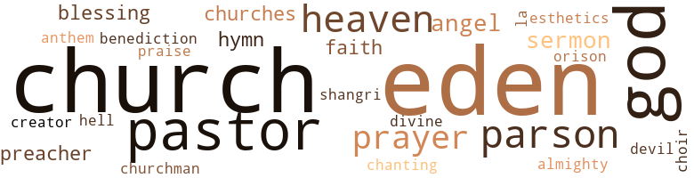

Oaks of Eden, by Turner, Allen Pelzer (1951)
81 music-related terms matched in this text.
Most frequent terms in this topic: rap (12); music (10); melody (6); song (5); tune (5)
chapter.n.01
Definition: a subdivision of a written work; usually numbered and titled
| word | sentence |
|---|---|
| chapter | This is the dawn of a new day in Eden and a new chapter in the glorious history of dear old Hopewell . |
chorus.n.01
Definition: any utterance produced simultaneously by a group
| word | sentence |
|---|---|
| chorus | Up goes a chorus of " yeas . " |
dance.n.01
Definition: an artistic form of nonverbal communication
| word | sentence |
|---|---|
| dance | What they say is merely an accompaniment to the dance - a sort of nothing to fill in the mental void which other - wise would degender the dancer and place him in the category of the by-nature-mute something . |
| dance | In the middle of the rousing melody something goes wrong , and the inimitable hostess , Stella Wingate , shakes off her bewil - dered dance partner , mixes a shot of " spike " with a glass of punch , quaffs , quickly gathers the train of her skirts above her ankles , and flounces out of the room . |
| dance | But their verbal calculations do not engage them long , for Mabel , cohostess for the night , calls the house to order and pro- ceeds to explain the already-too-obvious conduct of her friend : why she rebuffs her dance partner on the floor , how she feels tonight , her high spirit before the party , her anticipation of a joyous evening with her friends - and her lover , who has failed to appear , her great disappointment , the seeming impropriety of leaving her guests before the close of the party , the exasperating nature of the situation , which the guests might not understand . |
| dance | The night is now far-spent and former zest for dance is trans - formed into taste for wine . |
dance.v.03
Definition: skip, leap, or move up and down or sideways
| word | sentence |
|---|---|
| dancing | Between these windows is a small table on which rests a vase of withered flowers , contrasting sharply with the refreshing streams of sunlight , but bearing a striking resemblance to the frail , bewildered woman , who stands with folded arms and bowed head , sunbeams dancing about her feet . |
excerpt.n.01
Definition: a passage selected from a larger work
| word | sentence |
|---|---|
| excerpt | He closes his remarks with the quotation which contains this excerpt : " Remember now thy Creator in the days of thy youth , while the evil days come not .... " The president thanks the pastor for his presence and his remarks , and asks as many of the members as will do so to follow the pastor 's example and give a Bible quotation . |
hymn.n.01
Definition: a song of praise (to God or to a saint or to a nation)
| word | sentence |
|---|---|
| anthem | The language of the anthem , " Earth Has No Sorrow that Heaven Can not Heal , " seems to intensify her con - sciousness of that sorrow more than ever , and when she can no longer contain herself , she cries out , " Heal it now , dear Jesus . |
| hymn | Apparently the meeting is now over , for the milling crowd begin to fill the paths which lead to home , each adding his lusty voice to the resounding hymn : God moves in a mysterious way His wonders to perform ; He plants his footsteps on the sea , And rides upon the storm . |
| hymn | But when the Reverend Mr. Hopewell lines the hymn : Hark , from the tomb a doleful sound ; My ears attend the cry ... pandemonium breaks loose and everything imaginable happens to everybody susceptible to the suggestive nature of the song . |
melody.n.02
Definition: the perception of pleasant arrangements of musical notes
| word | sentence |
|---|---|
| melody | " What is so rare as a day in June ? " the poet asks ; a day on which the liquid melody of the birds haunts our memory ; on which the gentle waving of the boughs of trees give a warm salute of fellow - ship to the looker-on ; a day on which the rose and daffodil yield their petals with sweet reluctance ; a day on which cloudless skies blend their unheard melody with the scarcely audible gurgling of the playful stream ; on which all nature , conscious and benign , seems aware of man 's weakness and his strength , and therefore , administers to the needs of all . |
music.n.01
Definition: an artistic form of auditory communication incorporating instrumental or vocal tones in a structured and continuous manner
| word | sentence |
|---|---|
| music | Nor is the parson alone in his exuberance of feeling at the moment , for , amid the resonant echoes of joyous laughter and spontaneous applause , sounding , as it were , like virile music against the leafy canopy hung upon the elms of Holy Acres , " Amen , " " Yes , Lord , " and " Tell the news " strike a clear cre - scendo above the general buzzing of the crowd , while dozens plant the kiss of triumph on the tear-furrowed cheeks of penitent Eppie Fields . |
| music | Above the modulated tones of the music can be heard a lover 's loud whisper to his angel : " Soft lights , soft music , and a soft bundle of loveli - ness in my arms ! |
| music | Above the modulated tones of the music can be heard a lover 's loud whisper to his angel : " Soft lights , soft music , and a soft bundle of loveli - ness in my arms ! |
| music | " What is it , Jud - the lights , the music , or the gin ? " she re - turns with a smile that makes his next remark inevitable . |
| music | Damn the lights ; cut off the music ; I 'd still have my arms full of you , and that 's all that matters . |
| music | Others in the mad procession give as certain evidence of their inebriation of wine , of music , of love . |
| music | As the last sound of the music fades and the murmurs of the inflated dancers cease , forthwith feminine tongues lay siege to the cause of this sudden and surprising move of the most attractive girl at the party . |
| music | Certainly it comes home to Mabel and Jud under the force of their present experience together with soft music and low , shaded lights , and no inhibitions , except the restraint of an intoxicated conscience . |
| music | According to him one of these is a sweetheart , the other is sweet music . |
| music | So I 'm going to face the music and take my medicine like a man . " |
musical_instrument.n.01
Definition: any of various devices or contrivances that can be used to produce musical tones or sounds
| word | sentence |
|---|---|
| instruments | The murmuring in a measure ceased , the pastor proceeds to extol " ... the fine , humanitarian qualities of those who have gen - erously contributed their means to the building effort of this church ; of those who have spared no time , nor effort , to gather from whatever source , the ample sum announced in the report ; of all who from the very beginning have shown an encouraging in - terest in the work ; but most of all , of those whose Christian influ - ence shows its power in the bringing together and healing a mortal wound and forever closing a spiritual gap between two very fine souls - Sister Eppie Fields and Sister Stella Wingate , both of whom are valuable instruments in God 's kingdom-building pro- gram . |
phrase.n.02
Definition: a short musical passage
| word | sentence |
|---|---|
| phrases | Both of these phrases are no doubt exag - gerated for the purpose of conveying a vivid impression of experi - ences with light and sound - or the absence of these cosmic forces . |
| phrases | The first of these phrases represents a synthesis of darkness , while the second represents not an analysis , but the annihilation of sound . |
| phrase | When the veiled lady , Billy 's mother , shrieks her last phrase , " My baby ! " her Harrison and Richardson is already blazing in the direction of Sylvan , standing far to the right side of the court - room . |
| phrase | The mother 's quivering lips let fall the endearing phrase , " My child , " while the sweetheart answers , " Mother . " |
piano.n.01
Definition: a keyboard instrument that is played by depressing keys that cause hammers to strike tuned strings and produce sounds
| word | sentence |
|---|---|
| piano | Sitting at the piano with arms outstretched , as though she would play , she makes no sound . |
| piano | At the end of the toast , and in the midst of thunderous ap - plause , Jud lowers the glass of untouched wine , places it on the piano , and slowly moves to the immediate presence of his " blush - ing angel . " |
| piano | In the meantime , strike up a soft tune on that piano and let me spend these five minutes the happiest way I know - spinning a web of dreams about the girl whose presence is more than life to me - it 's love , it 's beauty , it 's revelation . " |
| piano | She strides over to the piano , and , with an air of feigned nonchalance , fingers a tanta - lizing tune and the young dancers waltz the time away to the entrancing rhythm of " The Blue Danube . " |
| piano | For a moment following this she sits and ponders , then goes to the piano and with trembling fingers plays softly , " Oh , where is my wandering boy tonight ? " and when the melody comes to an end , she rests her elbows on the keyboard and floods the ivory with tears . |
pipe.n.04
Definition: a tubular wind instrument
| word | sentence |
|---|---|
| pipes | Off to the right are the twelve old and middle-aged men - some chewing Brown Mule and others smoking Bull Durham to - bacco in corncob pipes - - who will determine the fate of Sylvan Fields . |
| pipe | Sensing the helplessness of the judge , the corpulent cop closes in upon the veiled woman , the starter of the trouble , but he retreats when she whips out from beneath her coat a six-inch , pearl-handle , 32-caliber Harrison and Richardson pistol and continues to address the judge : " You pipe down , judge . |
rap.n.05
Definition: genre of African-American music of the 1980s and 1990s in which rhyming lyrics are chanted to a musical accompaniment; several forms of rap have emerged
| word | sentence |
|---|---|
| rap | The fact is that when it seems certain that the present moment is having its effect upon him , there comes a rap at the door , followed by a tense moment of silence . |
| rap | Upon the second rap at the door , he helps his wife to her feet and into the bedroom . |
| rap | A third rap brings him to the door , where he meets the exuberant greeting of one who calls out of genuine friendship for the family and interest in Sylvan , but whose presence at this particular time is a grim reminder of the breakdown of parental control in the Fields ' household . |
| rap | One sharp rap on his desk with the long black gavel imposes upon them a breathless silence during which the judge adjusts his glasses and surveys the room , paying special attention to the court officials . |
| rap | Their emotional exuberance , however , draws no sympathy from the iron-clad judge , the rap of whose gavel brings quick order to the room . |
| rap | It dies , however , with a rap of the long black gavel upon the desk and the sound of the voice of the judge . |
| rap | Wielding a sharp rap of his gavel upon the desk , Judge Pomeroy issues the death sentence upon this impropriety , and , with the previous calm and decorum , the business of the court proceeds as the State questions Stella further . |
| rap | Immediately follow - ing the sharp rap of the gavel , there 's a slight pause of great expectancy ; then comes the judge 's memorable charge to the jury : " The jury has three things to consider in determining the verdict . |
| rap | However , the tension is eased when , with a sudden rap , the judge lets fall the gavel upon his desk , bringing the entire house to immediate attention , and forthwith instructs the sergeant-at-arms to find out if the jury is ready to report ; if so , to have them come in . |
| rap | The judge 's rap upon his desk brings audience anxiety to its peak ; then he declares the case of Sylvan Fields closed and orders the bailiffs to go after Mrs. Tate , the veiled lady who , in spite of the not - guilty verdict of the jury , has sentenced the defendant to eternal confinement in a murderer 's grave . |
| rap | With stubborn reluctance born of the ecstatic repose indulged in with Mabel a moment ago , Jud moves slowly to the door from which comes a commanding rap . |
| rap | But all sobbing suddenly ceases , and the two girls look wide-eyed at each other , when there comes a timid rap at the outer door . |
requiem.n.02
Definition: a musical setting for a Mass celebrating the dead
| word | sentence |
|---|---|
| requiem | On that occasion the gloom was partly lifted by the wide fields of amber grain , waving a cheery hello to the passing throng ; the acres of cotton , whose verdant foliage presaged abundant harvest in the fall ; the birds chanting a lively requiem as they flew above the procession ; the flowers , all in bloom , and the fruited trees of numerous kinds and hues ; the film of dust , which cast upon the throng the aspect of a dream , thereby shearing from the scene some of the sting of reality . |
rhythm.n.04
Definition: the arrangement of spoken words alternating stressed and unstressed elements
| word | sentence |
|---|---|
| rhythm | In the meantime , the lights burn low at 41 Windsor Lane , where the revelers at Stella Wingate 's party trip a fantastic toe to the scintillating rhythm of an entrancing melody like " On the Sunny Side of the Street , " et cetera . |
| rhythm | Here he draws her closer to him , still moving slowly to the rhythm of the gutta-percha band . |
| rhythm | She strides over to the piano , and , with an air of feigned nonchalance , fingers a tanta - lizing tune and the young dancers waltz the time away to the entrancing rhythm of " The Blue Danube . " |
scat.n.01
Definition: singing jazz; the singer substitutes nonsense syllables for the words of the song and tries to sound like a musical instrument
| word | sentence |
|---|---|
| scats | At this point the court is in an uproar , with spectators standing all over the room - some standing in their scats . |
section.n.01
Definition: a self-contained part of a larger composition (written or musical)
| word | sentence |
|---|---|
| section | " Every - body in this whole section knows the skill and power of lawyer Craig . |
| section | Now here is some real missionary work for this officious club ; to clean up that section of the town which allows a " pretty young hussy " to live alone in the community ... a too brazen act , even though it 's her own home . |
| section | The distance between these rumormongers , zero at the inter - section of two roads where they should separate , becomes greater and greater , until what was just above a whisper at the start is now a yell . |
sing.v.02
Definition: produce tones with the voice
| word | sentence |
|---|---|
| singing | The Hopewell choir is singing " Come , Ye Disconsolate " when Eppie enters and sits among the mothers , who occupy the deaconess 's corner . |
| sing | " Do n't you remember when he brought the McClellan Sisters to sing at Deacon Butts ' funeral and charged those five hundred people thirty cents each to get in ? " |
| sing | In leisurely strides , hand-in-hand , arm-in-arm , they form a semicircle about the punch bowl , Mabel on one side of the bowl and Jud on the other , swaying and swinging as they softly sing the sentimental tune , " Drink to Me Only with Thine Eyes , " thus pulling the curtain on a Lovers ' Ball that will not soon be forgotten - not only for its joyous revelry , but also for its poignant inter - lude in the experience of their most gracious and most fastidiously benign hostess , Stella Wingate . |
| sings | Among the girls and boys who have been disapproved by this exclusive social rating agency is Mabel Orr , a lovely girl of seven - teen , graceful and well mannered , whose school record is good , and who sings in the choir of the Hopewell Baptist Church , but whose family 's income is not sufficient to take them out of the economic cellar . |
song.n.01
Definition: a short musical composition with words
| word | sentence |
|---|---|
| song | And when the last glimpse of his death-box is shielded by the fast-falling clods of earth , the minister leads a song and gives the benediction , and the crowd , in silence , disperses and starts the long trek back to the village . |
| song | Eppie greets the morning with a song , a heartening aspect to her husband - and , perhaps , to herself - a sort of whistling in the dark . |
| song | At length the song is ended , the voices subside , and their echoes sleep behind the hills of Eden . |
| song | " As I was about to say , " she continues , " Stella would feel much better - even highly flattered - if we would all express to her , in song , the sentiment Jud expressed in the toast . |
| song | But when the Reverend Mr. Hopewell lines the hymn : Hark , from the tomb a doleful sound ; My ears attend the cry ... pandemonium breaks loose and everything imaginable happens to everybody susceptible to the suggestive nature of the song . |
tone.v.01
Definition: utter monotonously and repetitively and rhythmically
| word | sentence |
|---|---|
| chanting | On that occasion the gloom was partly lifted by the wide fields of amber grain , waving a cheery hello to the passing throng ; the acres of cotton , whose verdant foliage presaged abundant harvest in the fall ; the birds chanting a lively requiem as they flew above the procession ; the flowers , all in bloom , and the fruited trees of numerous kinds and hues ; the film of dust , which cast upon the throng the aspect of a dream , thereby shearing from the scene some of the sting of reality . |
tune.n.01
Definition: a succession of notes forming a distinctive sequence
| word | sentence |
|---|---|
| melody | " What is so rare as a day in June ? " the poet asks ; a day on which the liquid melody of the birds haunts our memory ; on which the gentle waving of the boughs of trees give a warm salute of fellow - ship to the looker-on ; a day on which the rose and daffodil yield their petals with sweet reluctance ; a day on which cloudless skies blend their unheard melody with the scarcely audible gurgling of the playful stream ; on which all nature , conscious and benign , seems aware of man 's weakness and his strength , and therefore , administers to the needs of all . |
| line | Midway between the house and the Drive , and on each line of the lot , left and right , grows a water oak , transplanted half-mature , about which are grouped a bench and two lawn chairs made of peeled willow painted white . |
| melody | In the meantime , the lights burn low at 41 Windsor Lane , where the revelers at Stella Wingate 's party trip a fantastic toe to the scintillating rhythm of an entrancing melody like " On the Sunny Side of the Street , " et cetera . |
| melody | In the middle of the rousing melody something goes wrong , and the inimitable hostess , Stella Wingate , shakes off her bewil - dered dance partner , mixes a shot of " spike " with a glass of punch , quaffs , quickly gathers the train of her skirts above her ankles , and flounces out of the room . |
| tune | In leisurely strides , hand-in-hand , arm-in-arm , they form a semicircle about the punch bowl , Mabel on one side of the bowl and Jud on the other , swaying and swinging as they softly sing the sentimental tune , " Drink to Me Only with Thine Eyes , " thus pulling the curtain on a Lovers ' Ball that will not soon be forgotten - not only for its joyous revelry , but also for its poignant inter - lude in the experience of their most gracious and most fastidiously benign hostess , Stella Wingate . |
| tune | The cigarette finished , Mabel makes an audible sigh , then hums the entrancing tune , " Somebody Loves Me , I Wonder Who , " which Jud evidently hears , but to which he does not seem to listen , for , without even looking at her , he turns from the door to the punch bowl into which he endeavors to bury whatever worries he harbors about Syl and the dreaded storm which he feels brewing in Stella 's room . |
| tune | In the meantime , strike up a soft tune on that piano and let me spend these five minutes the happiest way I know - spinning a web of dreams about the girl whose presence is more than life to me - it 's love , it 's beauty , it 's revelation . " |
| tune | She strides over to the piano , and , with an air of feigned nonchalance , fingers a tanta - lizing tune and the young dancers waltz the time away to the entrancing rhythm of " The Blue Danube . " |
| tune | Soon shifting her position from midfloor to the settee resting against the wall opposite the entrance door , she sits and hums a familiar tune over and over . |
| melody | For a moment following this she sits and ponders , then goes to the piano and with trembling fingers plays softly , " Oh , where is my wandering boy tonight ? " and when the melody comes to an end , she rests her elbows on the keyboard and floods the ivory with tears . |
| tunes | Whereas she broods and sobs and mopes , he whistles and reads and hums tunes known to be her favorites . |
| melody | The sun has sped three hours on its course across the heavens when Arthur Fields puts in his presence on the scene , imitating by whistle the bobwhite , the dove , the yellowhammer , and other birds whose melody flows in field and grove . |
waltz.v.01
Definition: dance a waltz
| word | sentence |
|---|---|
| waltz | She strides over to the piano , and , with an air of feigned nonchalance , fingers a tanta - lizing tune and the young dancers waltz the time away to the entrancing rhythm of " The Blue Danube . " |
whistle.n.01
Definition: the sound made by something moving rapidly or by steam coming out of a small aperture
| word | sentence |
|---|---|
| whistles | Whereas she broods and sobs and mopes , he whistles and reads and hums tunes known to be her favorites . |
whistle.v.01
Definition: make whistling sounds
| word | sentence |
|---|---|
| whistling | Eppie greets the morning with a song , a heartening aspect to her husband - and , perhaps , to herself - a sort of whistling in the dark . |
| whistle | The sun has sped three hours on its course across the heavens when Arthur Fields puts in his presence on the scene , imitating by whistle the bobwhite , the dove , the yellowhammer , and other birds whose melody flows in field and grove . |
zither.n.01
Definition: a musical stringed instrument with strings stretched over a flat sounding board; it is laid flat and played with a plectrum and with fingers
| word | sentence |
|---|---|
| cither | Others call it suicide , or self-destruction , cither to escape the certain penalty awaiting her upon capture , or to join in death her murdered son , as the only means of placating her disturbed conscience . |
219 violence-related terms matched in this text.
Most frequent terms in this topic: murder (35); knife (18); fight (17); killed (14); spite (12)
aggravation.n.02
Definition: unfriendly behavior that causes anger or resentment
| word | sentence |
|---|---|
| provocation | So it seems that her provocation to murder is ample , if ever such were the case . |
| provocation | That relationship of course is no more disturbing to Jud than to Mabel , but he is , perhaps , less judicious than she , for it never occurs to him that Stella 's emotional caldron is at the boiling point , and that the lid might blow off at the slighest provocation . |
| provocation | Thus , while Stella stands , like a frightened doe ready to dash into hiding at the slightest provocation , Mabel sneaks to the door and peeps through the keyhole , but being unable to see for the darkness , she asks boldly , " Who 's there ? " |
anger.n.01
Definition: a strong emotion; a feeling that is oriented toward some real or supposed grievance
| word | sentence |
|---|---|
| anger | But the scene which follows , anger , bewilderment , surprise , fear , is generally known ; a scene which makes an unhappy lot of five disconsolate souls . |
attack.v.01
Definition: launch an attack or assault on; begin hostilities or start warfare with
| word | sentence |
|---|---|
| assail | So , one by one , they bid Mabel and Jud the reigning " Queen and King " of the ball , adieu , and with hilarious effrontery , assail the stillness of the night , leaving behind them two hearts that beat in unison with the cosmic throb of love - but one that writhes in pain and withers on the cross of disappointment and disgust . |
belligerence.n.01
Definition: hostile or warlike attitude or nature
| word | sentence |
|---|---|
| belligerency | When Jud disappears , Sylvan ; perhaps conscious of the gravity of the situation - now more than ever - walks over to the door and looks out , then immediately turns , his hand in the right pocket of the light jacket he is wearing , and glares at Billy with an air of belligerency . |
bleeding.n.01
Definition: the flow of blood from a ruptured blood vessel
| word | sentence |
|---|---|
| bleeding | If that is what her eyes are say - ing , they get a ready response , for the instant Sylvan becomes aware of their language , he returns to his normal self , and , for - getting for the moment the slit and bleeding throat of Billy Tate and the crimson-bladed knife in his hand , crosses to her and lifts her trembling hands to his face . |
bloodshed.n.01
Definition: the shedding of blood resulting in murder
| word | sentence |
|---|---|
| bloodshed | However , fate steps in and decrees that there 'll be no fight , no bloodshed - only harsh words , heartaches , and tears . |
boomerang.n.01
Definition: a curved piece of wood; when properly thrown will return to thrower
| word | sentence |
|---|---|
| boomerangs | This subtle grouping of many people according to the whims of a few ( sometimes on the basis of varying shades of color , status in the realm of marginal profits , church affiliations , the location of residence , success in the business of rearing children ) often boomerangs upon the groupers , espe - cially as regards children , whose only criterion for association is the desire to play . |
craze.n.02
Definition: state of violent mental agitation
| word | sentence |
|---|---|
| frenzy | They are frightened into a frenzy , because they reason that Jud has not had the time to find Sylvan and return ; and even if he , by some freak transportation , has returned in so short a time , he would not knock at the door con - sidered almost his own , but would rush in with Sylvan , or with news from him . |
dagger.n.01
Definition: a short knife with a pointed blade used for piercing or stabbing
| word | sentence |
|---|---|
| dagger | That is the occasion on which Billy was killed , and while he lay spurting blood from the ugly wound left by Sylvan 's dagger , Stella begged him to take her and run away from it all . |
| dagger | Here is a slight pause , during which he shifts his position from the center to the right end of the jury stand , then continues : " I do not wish to bother you with technicalities or generalities , but simply with the cold , indisputable fact that Billy Tate is dead , and that he died fighting with Sylvan Fields , who had this dagger in his hand . |
| dagger | The effort on the part of Mr. Fields to dull the " dagger of anticipation , " which haunts his wife 's mind on this day of Sylvan 's trial , may be fruitless , but it is nevertheless determined . |
displeasure.n.01
Definition: the feeling of being displeased or annoyed or dissatisfied with someone or something
| word | sentence |
|---|---|
| displeasure | The prosecutor 's displeasure at the decision of the adamant judge is shown by his steady focus in the direction of the bench . |
| displeasure | This bit of information may come as a sur - prise to her , but she reveals no sign of displeasure over it . |
elimination.n.05
Definition: the murder of a competitor
| word | sentence |
|---|---|
| elimination | By the process of elimination one woman is left whose name is frequently heard in connection with Zippora 's death ; she is Syl - van 's love-mad sweetheart , Stella Wingate . |
engage.v.07
Definition: carry on (wars, battles, or campaigns)
| word | sentence |
|---|---|
| waged | She now realizes that her battle must be waged on two fronts . |
erase.v.01
Definition: remove from memory or existence
| word | sentence |
|---|---|
| erases | Thus , her tearful testimony wrings from her heart gall of bitterness and from the sympathetic spectators murmurs of indignation , which one stern look from the judge quickly erases , and the examination continues . |
| erase | Therefore , the Young Mothers ' Club , in an effort to erase their great sin against her when she was helpless and needed sympathy and protection most ( their attempt to evict her by court order from her home ) publicly announce at church that she has been made an honorary member of the club ; which means that Stella is now regarded as a lady of the highest quality . |
ferocity.n.01
Definition: the property of being wild or turbulent
| word | sentence |
|---|---|
| ferocity | While the last word of his sentence is still on the tongue of the Defense , the prosecutor springs to his feet with tigerlike ferocity and yells savagely : " I object , Judge , Your Honor . " |
fight.n.05
Definition: a boxing or wrestling match
| word | sentence |
|---|---|
| fight | " Was Billy Tate killed in that fight ? " |
| fight | " So there were two knives in the fight ? " |
| fight | " The previous witness has established the fact , which is a part of the record , that only one weapon was used in the fight in which Tate was murdered . |
| fight | Gentlemen , I want you to visualize your own son fight - ing with this defendant , who , at the end of the fight , walks away , leaving your boy lying in a pool of blood , struggling against the fatal odds - death . |
| fight | Gentlemen , I want you to visualize your own son fight - ing with this defendant , who , at the end of the fight , walks away , leaving your boy lying in a pool of blood , struggling against the fatal odds - death . |
| fight | Then he makes three steps to regain his position beside Mabel , who stands motionless , beautiful and frightened at the prospects of an impending fight . |
| fight | Now this remark adds fuel to her burn - ing indignation , and she shows every sign of the determination to get Syl or fight . |
| fight | Therefore , with these two raving women brought face to face in a death struggle for the love of the same man - a mother and a sweetheart grappling for the love of a son - a terrific fight seems inevitable . |
| fight | However , fate steps in and decrees that there 'll be no fight , no bloodshed - only harsh words , heartaches , and tears . |
| fight | Seeing that Stella 's last remark is designed to start a fight , Jud quickly offers a way out of the difficult situation : " Let Syl carry Mrs. Fields home , Stella , and come back just for a few minutes , in order that he might explain whatever you have in mind . " |
| fight | Long before the fight , Mabel had taken refuge in the sanc - tum sanctorum of Stella 's bedroom , where Stella also finds a hiding place the moment Sylvan lands the first blow on Billy 's jaw . |
| fight | Her own community - youth and adult - call her fight their fight , and offer their moral and financial aid in her most embarrassing experience . |
| fight | But when they propose holding Mabel and Stella as material wit - nesses in the case , another fight looms on the horizon . |
| fight | Sonic think that Stella should be held just as liable as Sylvan , because of her affair with Tate ; that she should not have let Tate into her house that night , while expecting Fields to call ; that she could have prevented the fight , if she had asserted her right as owner of the house and demanded that Tate leave immediately after his arrival . |
fight.v.02
Definition: fight against or resist strongly
| word | sentence |
|---|---|
| fighting | Then Syl and Billy got to fighting and I ran into Stella 's room until all the noise was over . |
| fight | " Sylvan , did you fight with Billy Tate at the home of Stella Wingate on the night of May sixth ? " |
| fighting | Here is a slight pause , during which he shifts his position from the center to the right end of the jury stand , then continues : " I do not wish to bother you with technicalities or generalities , but simply with the cold , indisputable fact that Billy Tate is dead , and that he died fighting with Sylvan Fields , who had this dagger in his hand . |
| fight | Therefore , when you 've given your heart to one , you 've got ta fight to hold him , and that 's what I 'm doing tonight . |
| fights | But when he proceeds to kiss her , she fights him off . |
| defending | During all of the crossfire among contending forces in this melee , Jud cautiously takes up a safe position which leaves the door quite accessible and makes it very clear that whatever course Sylvan might take in defending the honor of Stella and the dignity of her home , he plans to have no share in it . |
| fight | Her own community - youth and adult - call her fight their fight , and offer their moral and financial aid in her most embarrassing experience . |
fit.n.01
Definition: a display of bad temper
| word | sentence |
|---|---|
| conniption | Not long , however , does he suffer the discomfiture of his wife 's conniption . |
| tantrums | Then he joins his mother at the door and they depart , leaving Stella to her wild tantrums and her tears . |
fury.n.01
Definition: a feeling of intense anger
| word | sentence |
|---|---|
| fury | Recall for a moment the night of the gay party , when Stella 's fury broke loose and ran wild for twin reasons - twin insults : ( 1 ) Her gay party , the glamour of the guests , the artistry and decorations of the house for the occasioin , and her anticipation of his presence were all ignored and unseen by the only man she had ever loved . |
| fury | And finally , Judge Pomeroy emerges from beneath his desk apparently with more authority than ever , beating and banging his gavel with new fury . |
| rage | " Until Syl comes where ? " she snaps back in a rage . ' |
| fury | And at the instant that the Wingate fury reaches its peak and the autonomous pendulum is about to swing , the outer door swings ajar and in steps the wayward lover , the troublesome son - Sylvan . |
| fury | " Then I 'd like to know your damned reasons for warning Syl not to come here , " she blasts with a flash of fury . |
| rage | This remark puts Stella in a rage . |
| fury | As clears the sky when heavy clouds have spent their darkening fury , so clears the threatening fog hovering over 41 Windsor Lane , when passes the mischief-making mother of Sylvan Fields , taking , from the foils of Stella Wingate , her only son . |
| fury | But in spite of the fact that fury rides at its highest peak , it finally subsides and leaves her remarkably subject to reason . |
| fury | But her insistence upon going was to escape from her own fury . |
| fury | Finally when Stella 's fury spends its force , she joins Billy in the living room , where her arrowlike invectives might find a target more suitable for abuse . |
gall.v.02
Definition: irritate or vex
| word | sentence |
|---|---|
| irks | This remark irks Stella so that she simply akimboes and gives her an inflexible stare . |
gun.n.01
Definition: a weapon that discharges a missile at high velocity (especially from a metal tube or barrel)
| word | sentence |
|---|---|
| gun | With a quick shift , Mrs. Tate , who obviously has not wished to hurt Mrs. Fields , backs down the aisle toward the door , her gun still smoking and the spectators making unobstructed passage with - out a squawk . |
| gun | The menace of a blazing gun no longer present , the milling crowd gather about the still body of Sylvan and his weeping , pros - trate mother . |
| gun | Therefore , when she empties her gun and leaves the courtroom , no one follows her ; instead , everybody rushes to and crowds around the body of Fields on the floor . |
| gun | This outburst , at the time when Mrs. Fields is silent and not even at the grave , re-emphasizes the fact that Sylvan died primarily not as the victim of hot lead from the gun of Billy 's mother , but as the victim of two great loves , neither of which would let him go - until now . |
| gun | Following the finding of the coroner comes a period of wild speculation as to the means by which death came to the late Zippora Tate , the deft wielder of the gun that drained from Sylvan Fields the last drop of lifeblood . |
| gun | But circumstances seem to exculpate the mad lover of Windsor Lane , for she has been abed and has not stirred since Sylvan fell before the blast of Zippora 's gun . |
hate.n.01
Definition: the emotion of intense dislike; a feeling of dislike so strong that it demands action
| word | sentence |
|---|---|
| hatred | Reasoning logically , one will conclude that the most natural hatred that might possess Mabel in connection with this whole Windsor Lane scandal is her hatred for Mrs. Fields , whose sudden invasion of Stella 's home set off the fuse which blew the social top from Eden and wound the gossip-clock that ticks away at this very hour . |
| hatred | Reasoning logically , one will conclude that the most natural hatred that might possess Mabel in connection with this whole Windsor Lane scandal is her hatred for Mrs. Fields , whose sudden invasion of Stella 's home set off the fuse which blew the social top from Eden and wound the gossip-clock that ticks away at this very hour . |
hate.v.01
Definition: dislike intensely; feel antipathy or aversion towards
| word | sentence |
|---|---|
| hated | ( 2 ) Into the sacred precinct of her private home came an uninvited guest , a woman who hated Stella more than she hated sin ; it was Sylvan 's mother seeking to rescue him from the snares of this " terrible Wingate gang . " |
| hated | ( 2 ) Into the sacred precinct of her private home came an uninvited guest , a woman who hated Stella more than she hated sin ; it was Sylvan 's mother seeking to rescue him from the snares of this " terrible Wingate gang . " |
| hates | You know how that woman hates you ! " |
| hate | I hate to see her all fussed up like that ; it makes life tough for all the rest of us - especially you , who 's got ta sleep with her . " |
| hates | - in time to see Stella in the arms of a man whom Sylvan hates with a reckless vengeance . |
hostility.n.01
Definition: a hostile (very unfriendly) disposition
| word | sentence |
|---|---|
| hostility | Eyes previously unfriendly and reproachful are now dimmed and un - armed , showing no sign of hostility , but to their own hampered vision . |
hostility.n.02
Definition: a state of deep-seated ill-will
| word | sentence |
|---|---|
| antagonism | But con - trary to Eppie 's expectation , there is no antagonism , no criticism , no hint of opposition to the program as outlined by her and Parson Hopewell . |
indignation.n.01
Definition: a feeling of righteous anger
| word | sentence |
|---|---|
| indignation | Thus , her tearful testimony wrings from her heart gall of bitterness and from the sympathetic spectators murmurs of indignation , which one stern look from the judge quickly erases , and the examination continues . |
| indignation | No words , no laughter , no further expression of doubt or fear or indignation , as they stand embraced - only the pathetic heaving of two bosoms held close by the unspeakable pressure of new - found love in their hearts ! |
| outrage | The constituents of the community feel that the effort to oust a wholly respectable citizen from her home by persons who do not even live in the community is a flagrant outrage against the girl and an insulting presumption upon the intelligence of those who live about her as friends and neighbors . |
infuriate.v.01
Definition: make furious
| word | sentence |
|---|---|
| infuriates | But this insinuation upon Stella 's judgment and Sylvan 's true worth , in the opinion of Stella , infuriates and makes her more determined to go ; so much so that Mabel and Jud are compelled to use force to stop her : " Mabel , there 's always another hat , another coat , another dress . |
injury.n.01
Definition: any physical damage to the body caused by violence or accident or fracture etc.
| word | sentence |
|---|---|
| injury | When Mabel suggests rather inadvertently that there are other men as worthy , or perhaps more worthy than Sylvan , she heaps an unbearable insult upon an unholy injury . |
| harm | " Stella , I sure did n't mean no harm by what I done , and I most humbly do apologize for coming in here late like this . |
invade.v.01
Definition: march aggressively into another's territory by military force for the purposes of conquest and occupation
| word | sentence |
|---|---|
| invades | As she takes the stand and faces the court , a stillness that fairly makes audible the heartbeat of one 's neighbor invades the room . |
| invade | Then , turning to Mrs. Fields with all the contempt she can muster , she rails , " This is Forty-one Windsor Lane ; I am the sole owner of this estate , and I dare you or any other slut to invade the privacy of my home . " |
jab.n.02
Definition: a quick short straight punch
| word | sentence |
|---|---|
| jabs | And before he can steady himself , Sylvan lashes into him with jabs , hooks , uppers , and overs - all of which Billy sends flying back just as hard and just as fast . |
kill.v.10
Definition: cause the death of, without intention
| word | sentence |
|---|---|
| killed | " Do you remember the story in the Bible about the boy who went away from home , and when he came back they killed a calf and a hog and a turkey for a grand reception for him ? " |
| killed | Let 's see - he had killed somebody too , had n't he ? " |
| kill | Or it may be that she herself is giving way to the same idea : the inevitability of the bludgeon of fate over the heads of those who violate the law of God : " Thou shalt not kill . " |
| killed | " No , he was killed . " |
| killed | " Who killed him ? " |
| kill | " So you did n't actually see Fields kill Tate ? " |
| killed | " Tell me , Miss Wingate , just why Fields killed Tate . " |
| killed | " If I can establish the fact that this woman operates a house of prostitution , it will at once advance the probability that some other lurking suitor killed Tate . " |
| killed | " What makes you so sure , Miss Wingate , that Sylvan Fields killed Billy Tate ? " |
| killed | " I did n't say that I was sure that Syl killed him . " |
| killed | " Was Billy Tate killed in that fight ? " |
| killed | That is the occasion on which Billy was killed , and while he lay spurting blood from the ugly wound left by Sylvan 's dagger , Stella begged him to take her and run away from it all . |
| kill | " The first witness declared that she saw Sylvan Fields kill Billy Tate . |
| killed | I repeat , gentlemen , that the State must prove that Fields killed Tate , in order to convict him . |
| killed | Second , you must consider the probability of guilt - whether or not the evidence given is sufficient to convince you that Fields actually killed Tate . |
| kill | But I did n't mean to kill him . |
| killed | " Let 's get him out of here and nobody will know who killed him . " |
| killed | " I do n't see why you want to lock us up just because a man happened to get killed in our home , " Mabel tearfully cries . |
| kill | The following is a fair sample : " Is they done ketch dat guy yet dat kill the feller on the Lane ? " |
killing.n.02
Definition: the act of terminating a life
| word | sentence |
|---|---|
| kill | This procedure sets the spectators at ease , and what at first had appeared to be a vicious beast crouched for the kill of a helpless girl , turns out to be a human being sympathetic and understanding . |
| killing | The interruption is timely , for any reason which Stella might give for the murder would be an admissioin that Sylvan did the killing . |
| killing | In the first place , the witness in question said that she was there and saw the murder ; finally , she admitted that she is not sure that Fields did the killing . |
| killing | Now , your Honor , if she is not sure who did the killing , how can she be sure whether a knife was used at all , or how many ? " |
| killing | " The second witness said that she also , along with others , saw the killing . |
| killing | Likewise , on cross-examination , she admitted that she is not sure who did the killing . |
| kill | " You know the gals where the boy was kill . " |
knife.n.02
Definition: a weapon with a handle and blade with a sharp point
| word | sentence |
|---|---|
| knife | With a more moderate gait than that which brought him before the witness , the prosecutor goes to his table and gets therefrom a long switchblade pocket knife which he opens as he again takes his position before the witness , who is now drying her tears . |
| knife | " Did you ever see this knife before ? " |
| knife | " Did you see any other knife or weapon of any sort that night ? " |
| knife | " Well , it 's like this : When I went to Stella 's late that night and found Billy there , I did n't like the way he spoke ; so I got mad and drew my knife , but he grabbed my arm so I could n't use my knife . |
| knife | " Well , it 's like this : When I went to Stella 's late that night and found Billy there , I did n't like the way he spoke ; so I got mad and drew my knife , but he grabbed my arm so I could n't use my knife . |
| knife | While I was nailing him with my left hand he was getting out his knife . |
| knife | But he never did let go my arm : so I did n't get a single swing at him with my knife . |
| knife | He musta fell on his own knife when he knocked me down . " |
| knives | " So there were two knives in the fight ? " |
| knife | " Did you ever see this knife before ? " |
| knife | The Defense holds a pearl-handled knife aloft , so that spectators as well as the witness can see it . |
| knife | " That 's the knife I had . " |
| knife | Now , your Honor , if she is not sure who did the killing , how can she be sure whether a knife was used at all , or how many ? " |
| knife | " Objection overruled ; the knife becomes evidence in the case . |
| knife | ( He exhibits the knife previously identified by a witness . ) |
| knife | But almost as quick as a flash Sylvan 's right hand whips out a knife ready for use , which he plunges into Billy 's neck , letting a stream of blood from the jugular vein . |
| knife | The groaning subsides and the limp body of the unfortunate victim of the knife is crimson with his own blood , as he lies pros - trate on the floor . |
| knife | In the few moments of silence which ensue , Sylvan appears to be in a daze , looking first at his knife , next at the lifeless body of Billy , then at Stella 's bedroom door . |
| knife | If that is what her eyes are say - ing , they get a ready response , for the instant Sylvan becomes aware of their language , he returns to his normal self , and , for - getting for the moment the slit and bleeding throat of Billy Tate and the crimson-bladed knife in his hand , crosses to her and lifts her trembling hands to his face . |
malice.n.01
Definition: feeling a need to see others suffer
| word | sentence |
|---|---|
| spite | But in spite of the fervor of her appeal , or the warmth of her smile , her regalia calls from her unemotional husband no comment which would faintly imply that he is even slightly im - pressed . |
| spite | It is well , too , that the pause is slight , for the restlessness of the spectators is getting out of con - trol - not by any voluntary reaction on their part , but by some subliminal surging which impels them in spite of themselves . |
| spite | In spite of his obvious effort to hide it , even the judicial austerity of the Bench can not restrain a sympathetic tear in the eye of Judge Pomeroy . |
| spite | The judge 's rap upon his desk brings audience anxiety to its peak ; then he declares the case of Sylvan Fields closed and orders the bailiffs to go after Mrs. Tate , the veiled lady who , in spite of the not - guilty verdict of the jury , has sentenced the defendant to eternal confinement in a murderer 's grave . |
| malice | But so far as I know Mabel has manifested no evidence - in word or deed - that she holds the slightest semblance of malice against the woman who drove her sweetheart into seclusion . |
| spite | In spite of the fact that none of the parties suspected by the gossipers of the village of murdering Mrs. Tate are even men - tioned in the coroner 's report , the slimy rumor persists long after her body has been transported by Sellars Brothers , Morticians , to a distant village , Havana , Florida , there to rest beside her aged mother . |
| spite | Or maybe I should n't expect her to work with me , in spite of Reverend Hopewell 's assurances . " |
| spite | Somehow , my confi - dence in her integrity grows firmer and firmer , in spite of others ' opinions to the contrary . |
| spite | For , in spite of her resolve to venture a meeting with Stella alone , she admits a fear of the idea . |
| spite | In spite of the success of the Hopewell Baptist Church - which you insist upon attributing to me - if your pastor has been of service to this church and this community , I trust it will not be measured in terms of dollars raised or buildings re - paired , but rather let my usefulness be measured in terms of hopes lifted , faiths confirmed , and breaches mended in the structure of the life and aspirations of my people ... . |
| spite | But in spite of unanimous protest against this utter disregard for others ' rights , everyone receives more than his share at the hands of Mabel , who requires a toast of several of the men , including Jud , and two of the women as the price of her service . |
| spite | But the club has never had a larger number than twenty-five at any one time - that in spite of Eden 's three hundred and fifty children at the peak of its human productivity . |
| spite | But in spite of the fact that fury rides at its highest peak , it finally subsides and leaves her remarkably subject to reason . |
molest.v.01
Definition: harass or assault sexually; make indecent advances to
| word | sentence |
|---|---|
| molesting | So that when she hears Stella 's distressing plea to Billy to cease molesting her , Mabel dashes into the room and demands that Billy leave at once . |
murder.n.01
Definition: unlawful premeditated killing of a human being by a human being
| word | sentence |
|---|---|
| murder | " ' The trial of Sylvan Fields for the murder of Billy Tate in a brawl on May sixth promises to be one of the hottest legal battles in the history of the courts of Eden . |
| murder | He ai n't losed a murder case in five years , they tell me . |
| murder | The popularity of the principals in Eden 's murder mix-up is attested by the number and quality of the crowd on hand when court convenes for the trial . |
| murder | But to every cook , every nurse , every laundress , every yardman , every preacher , every farmer for miles around , it is a " legal holiday , " and they celebrate two events in one : the murder of Billy Tate and the trial of Sylvan Fields . |
| murder | The first witness called to the stand is a trim , slender figure in the person of Mabel Orr , who was present the night of Billy Tate 's murder . |
| murder | " Who witnessed the murder ? " |
| murder | The interruption is timely , for any reason which Stella might give for the murder would be an admissioin that Sylvan did the killing . |
| murder | " The night of the murder ? " |
| murder | " Then you 're pleading guilty or not guilty to the charge of first-degree murder ? " |
| murder | But there they are , poor girls , eyewitnesses to foul murder , which Sylvan swears that he did n't commit . |
| murder | In the first place , the witness in question said that she was there and saw the murder ; finally , she admitted that she is not sure that Fields did the killing . |
| murder | Everyone stares blankly at the man who has just poured out his mind to the jury and his heart to God for the boy whose life hangs in the balance for the murder which he swears he did not commit . |
| murder | Third , you must consider the degree of guilt - whether or not it was a willful , premeditated murder , or whether it was a freak murder , that is , suicide by accident , as claimed by the defendant . |
| murder | Third , you must consider the degree of guilt - whether or not it was a willful , premeditated murder , or whether it was a freak murder , that is , suicide by accident , as claimed by the defendant . |
| murder | Under ordinary circumstances , the defendant in a murder trial is remanded to his cell during the recess period of court . |
| murder | Knowledge of the fact that court will reconvene in a moment and that there 's a grave probability her son may be convicted of murder renders her insensible to the thirst which she experienced only a moment ago ; therefore , she refuses the water taken from the table of the Defense , offered by Miss Le Bon . |
| murder | He pays special attention to the occupants on the front row , where sits Sylvan half crouched , and obviously preoccupied in mind ; where sits Mrs. Fields ten feet away with her husband and friend ; where sits Mrs. Tate heavily veiled and deeply grieved over the murder of her son , Billy ; where sit bewildered Stella and Mabel trying to fathom Sylvan 's change of plea from " guilty " to " not guilty . " |
| murder | When the curious crowd of more than a thousand followed the remains of Billy Tate over the winding , dusty road from the Hopewell Baptist Church one afternoon early in May , none thought that murder would bring the same and additional numbers to the cemetery again early in July . |
| murder | Some call it murder - murder by some crazed mem - ber of Sylvan 's family . |
| murder | Still others , more generous in their judgments , surmise that it is neither suicide nor murder ; that the loneliness brought on by the death of her son , and the additional depression of spirit induced by her disappointment at court over the shameful verdict of a biased or an inebriated jury , caused her to seek rest and relief at the grave where her son lies buried ; that her fear , fatigue , and nervous prostration plunged her , finally , into a sleep which still holds her fast in the mortuary parlors of the Sellars Brothers - Morticians . |
| murder | The murder angle is whooped up by the finding of footprints in the mud near the point where the body is lying , and when the rumor is generally spread that the footprints are those of a woman , names at once begin to fly , until every child in Eden is practically certain not only that Zippora Tate was murdered , but also who murdered her . |
| murder | But if she is the murdering type , it seems that she would have com - mitted murder long ago , when , perhaps , murdering the right person at the right time might have given Sylvan at least a tempo - rary stay among the living . |
| murder | So it seems that her provocation to murder is ample , if ever such were the case . |
| murder | The question , then , is , Why should Mabel wish to murder a woman who has done her no wrong and let go , unmolested , one whose effrontery lies beneath the terrible community disaster ? |
| murder | Thus run the gamut of these questions and comments over the village of Eden , doubly animated during the last twelve months by murder , suicide , and gossip . |
| murder | So is life at Eden , the snug little town behind the hills , where the determined Billy Tate died at the feet of the girl who spurned his love for another ; where the petulant Sylvan Fields slew his rival for the love of Stella Wingate and was slain in the Eden courtroom by the victim 's mother ; where Mrs. Tate took her own life at the grave , of her murdered son ; where the dynamic Stella Wingate dared the mother of her sweetheart to violate the privacy of her home ; where the irresistible Mabel Orr wrapped her per - sonality around one like the aroma of some exotic perfume ; where the fleetfooted Jud Wilbur left his best friend in the clutches of the law , charged with murder ; where a fair-minded judge refused to be influenced by a group of busybodies who sought to evict an innocent girl from her own home for the " crime " of simply living alone ; where Eppie Fields spent more time away than at home , giving rise to the basic problem of this story - letting the child get out of hand ; and finally , where the diligent Miss Le Bon who , never too tired to follow up the children whom she taught , wore bouquets of thorns rather than roses for her arduous toil and , finally discouraged , sought and found employment in a distant city - to the regret of the decent , forward-looking people of a growing community . |
| murder | Satisfied , more or less , with the story that Mabel and Stella tell concerning the murder , the bluecoats summon a mortician for the proper disposal of the remains of Billy Tate . |
| murder | " We ai n't disputin ' that , but we got ta hold you as material witnesses to the murder . |
| murder | The bluecoats are now on the porch headed for the squad car in which their material witnesses to the murder will ride . |
| murder | If there 's any desire among the curious tongue-wag - gers to comment upon the circumstances of the murder , it does not come to the surface , and in appearance at least there march to - gether for once in this Shady Grove community a thousand people of one accord . |
| murder | However otherwise diverse in attitude and activity , a funeral brings them together - especially if it 's a victim of murder . |
| murder | To some the murder is a terrible blot on the good name of the community , and they feel that justice should soon deal with those responsible for the blot . |
| murder | It is a foregone conclusion in the minds of some that Sylvan Fields will certainly hang - not only he , but also the two girls , Stella Wingate and Mabel Orr , who were both witnesses of and accessories to the murder . |
| murder | Their conclusion is based upon the absence of any precedent of such a murder - so far as they know . |
| murder | These are the open-air evaluations of the case of the City of Eden versus Sylvan Fields for the " shameful murder of Billy Tate , the finest boy in town . " |
murder.v.01
Definition: kill intentionally and with premeditation
| word | sentence |
|---|---|
| murdered | " The court 's records show that Billy Tate was murdered at Forty-one Windsor Lane on the night of May sixth . |
| murdered | " That he murdered Tate ? " |
| murdered | One big factor in the vanishing of Mrs. Tate is the fact that on the day of the trial practically everybody in the community is in court or on the yard , and interest in the murdered is double that manifested in the murderer . |
| murdered | Others call it suicide , or self-destruction , cither to escape the certain penalty awaiting her upon capture , or to join in death her murdered son , as the only means of placating her disturbed conscience . |
| murdered | The murder angle is whooped up by the finding of footprints in the mud near the point where the body is lying , and when the rumor is generally spread that the footprints are those of a woman , names at once begin to fly , until every child in Eden is practically certain not only that Zippora Tate was murdered , but also who murdered her . |
| murdering | But if she is the murdering type , it seems that she would have com - mitted murder long ago , when , perhaps , murdering the right person at the right time might have given Sylvan at least a tempo - rary stay among the living . |
| murdering | But if she is the murdering type , it seems that she would have com - mitted murder long ago , when , perhaps , murdering the right person at the right time might have given Sylvan at least a tempo - rary stay among the living . |
| murdering | If she is the murdering type , just why does she let Stella go free and unharmed , after finding out her relations with her son , seeing that he would not be counseled about her ? |
| murdered | Yet the rumor persists that Eppie Fields has murdered Zippora Tate and placed her body upon the grave of her son , Billy - a conclusion which , though possible , is highly improbable . |
| murdering | In spite of the fact that none of the parties suspected by the gossipers of the village of murdering Mrs. Tate are even men - tioned in the coroner 's report , the slimy rumor persists long after her body has been transported by Sellars Brothers , Morticians , to a distant village , Havana , Florida , there to rest beside her aged mother . |
| murdered | So much gossip has not gone the busy rounds of clubs , shops , schools , and even churches , since Billy Tate lay murdered on the floor of Stella Wingate 's home more than a year ago . |
| slain | So is life at Eden , the snug little town behind the hills , where the determined Billy Tate died at the feet of the girl who spurned his love for another ; where the petulant Sylvan Fields slew his rival for the love of Stella Wingate and was slain in the Eden courtroom by the victim 's mother ; where Mrs. Tate took her own life at the grave , of her murdered son ; where the dynamic Stella Wingate dared the mother of her sweetheart to violate the privacy of her home ; where the irresistible Mabel Orr wrapped her per - sonality around one like the aroma of some exotic perfume ; where the fleetfooted Jud Wilbur left his best friend in the clutches of the law , charged with murder ; where a fair-minded judge refused to be influenced by a group of busybodies who sought to evict an innocent girl from her own home for the " crime " of simply living alone ; where Eppie Fields spent more time away than at home , giving rise to the basic problem of this story - letting the child get out of hand ; and finally , where the diligent Miss Le Bon who , never too tired to follow up the children whom she taught , wore bouquets of thorns rather than roses for her arduous toil and , finally discouraged , sought and found employment in a distant city - to the regret of the decent , forward-looking people of a growing community . |
| murdered | So is life at Eden , the snug little town behind the hills , where the determined Billy Tate died at the feet of the girl who spurned his love for another ; where the petulant Sylvan Fields slew his rival for the love of Stella Wingate and was slain in the Eden courtroom by the victim 's mother ; where Mrs. Tate took her own life at the grave , of her murdered son ; where the dynamic Stella Wingate dared the mother of her sweetheart to violate the privacy of her home ; where the irresistible Mabel Orr wrapped her per - sonality around one like the aroma of some exotic perfume ; where the fleetfooted Jud Wilbur left his best friend in the clutches of the law , charged with murder ; where a fair-minded judge refused to be influenced by a group of busybodies who sought to evict an innocent girl from her own home for the " crime " of simply living alone ; where Eppie Fields spent more time away than at home , giving rise to the basic problem of this story - letting the child get out of hand ; and finally , where the diligent Miss Le Bon who , never too tired to follow up the children whom she taught , wore bouquets of thorns rather than roses for her arduous toil and , finally discouraged , sought and found employment in a distant city - to the regret of the decent , forward-looking people of a growing community . |
musket_ball.n.01
Definition: a solid projectile that is shot by a musket
| word | sentence |
|---|---|
| ball | It turns out happily , however , that Sylvan has demonstrated his prowess on the base - ball mound by pitching a no-hit , no-run game . |
| ball | That accounts for his being at the ball without a girl friend . |
| ball | So , one by one , they bid Mabel and Jud the reigning " Queen and King " of the ball , adieu , and with hilarious effrontery , assail the stillness of the night , leaving behind them two hearts that beat in unison with the cosmic throb of love - but one that writhes in pain and withers on the cross of disappointment and disgust . |
| ball | As every fan knows , however , the loss of ground on two or even three downs does not necessarily mean the loss of the game so long as the ground-losers retain the ball . |
open_fire.v.01
Definition: start firing a weapon
| word | sentence |
|---|---|
| fired | The desperate moment brings the two mothers to grips , before the second shot is fired . |
pistol.n.01
Definition: a firearm that is held and fired with one hand
| word | sentence |
|---|---|
| pistol | Sensing the helplessness of the judge , the corpulent cop closes in upon the veiled woman , the starter of the trouble , but he retreats when she whips out from beneath her coat a six-inch , pearl-handle , 32-caliber Harrison and Richardson pistol and continues to address the judge : " You pipe down , judge . |
punch.n.01
Definition: (boxing) a blow with the fist
| word | sentence |
|---|---|
| punch | In the middle of the rousing melody something goes wrong , and the inimitable hostess , Stella Wingate , shakes off her bewil - dered dance partner , mixes a shot of " spike " with a glass of punch , quaffs , quickly gathers the train of her skirts above her ankles , and flounces out of the room . |
| punch | " I 'm trying to drink up this punch . |
rape.n.03
Definition: the crime of forcing a woman to submit to sexual intercourse against her will
| word | sentence |
|---|---|
| assault | A terrible sin with which to assault the person - ality of an innocent child ! |
resentment.n.01
Definition: a feeling of deep and bitter anger and ill-will
| word | sentence |
|---|---|
| bitterness | She seizes his arm , but before she can speak he surprises her with a sardonic laugh which , because of its metallic ring , be - trays the bitterness beneath it . |
| bitterness | Thus , her tearful testimony wrings from her heart gall of bitterness and from the sympathetic spectators murmurs of indignation , which one stern look from the judge quickly erases , and the examination continues . |
| resentment | The labor of the Defense had brightened the prospects of freedom for a good , likable boy gone wrong , while the prosecutor 's emphasis upon a visualized blood-and-dagger scene completely neutralizes the previous effect and turns exulta - tion into resentment . |
| bitterness | As the gods would have it , however , ere bitterness reaches its crest , Parson Hopewell comes riding along in his buggy , drawn by the old gray mare , and stops to explain further " just how Sister Fields might go about the work and what assistance Brother Fields might give . " |
riot.n.01
Definition: a public act of violence by an unruly mob
| word | sentence |
|---|---|
| riot | However , the rumor runs riot not for long , for the reason that ( the general outlay fairly consumed ) - just as the pastor begins to commend his captains , seated at his table ( all other tables have standing service ) , " for the excellent manner in which the campaign , the spirit of co-operation , the success of the drive , but most of all . . . " Stella ( who , looking like a flower fresh and sweet with morn - ing dew , steps from a taxi ) walks majestically to the vacant chair , and sits beside Mrs. Hopewell , who affectionately places one arm around her , whispers the social tete-a-tete , and offers her portions of food delicacies , which Stella graciously declines and , obviously recoiling under the piercing stare of a thousand eyes , enters into the celebration with passive gusto . |
sic.v.01
Definition: urge to attack someone
| word | sentence |
|---|---|
| set | Stella 's hands which she had defiantly set upon her hips , as a belligerent gesture for Syl , slowly return to their natural position as the newcomer steps inside , uninvited , and proceeds to survey the room . |
sting.n.03
Definition: a painful wound caused by the thrust of an insect's stinger into skin
| word | sentence |
|---|---|
| sting | On that occasion the gloom was partly lifted by the wide fields of amber grain , waving a cheery hello to the passing throng ; the acres of cotton , whose verdant foliage presaged abundant harvest in the fall ; the birds chanting a lively requiem as they flew above the procession ; the flowers , all in bloom , and the fruited trees of numerous kinds and hues ; the film of dust , which cast upon the throng the aspect of a dream , thereby shearing from the scene some of the sting of reality . |
| sting | Then-the sting of her outward act will reveal the true virus of her inward thought , and there 'll be no need for surmising further , as we both are doing overfreely tonight . " |
| sting | But Stella , smarting under the sting of his rebuff , and the disdainful presence of his too-officious mother , refuses to be compensated in any such manner . |
suicide.n.01
Definition: the act of killing yourself
| word | sentence |
|---|---|
| suicide | Third , you must consider the degree of guilt - whether or not it was a willful , premeditated murder , or whether it was a freak murder , that is , suicide by accident , as claimed by the defendant . |
| suicide | Others call it suicide , or self-destruction , cither to escape the certain penalty awaiting her upon capture , or to join in death her murdered son , as the only means of placating her disturbed conscience . |
| self-destruction | Others call it suicide , or self-destruction , cither to escape the certain penalty awaiting her upon capture , or to join in death her murdered son , as the only means of placating her disturbed conscience . |
| suicide | Still others , more generous in their judgments , surmise that it is neither suicide nor murder ; that the loneliness brought on by the death of her son , and the additional depression of spirit induced by her disappointment at court over the shameful verdict of a biased or an inebriated jury , caused her to seek rest and relief at the grave where her son lies buried ; that her fear , fatigue , and nervous prostration plunged her , finally , into a sleep which still holds her fast in the mortuary parlors of the Sellars Brothers - Morticians . |
violence.n.03
Definition: a turbulent state resulting in injuries and destruction etc.
| word | sentence |
|---|---|
| violence | No other verdict seems possible in the absence of any mark of violence upon the body , or any other evidence of death by other than natural causes . |
weapon.n.01
Definition: any instrument or instrumentality used in fighting or hunting
| word | sentence |
|---|---|
| weapon | " Did you see any other knife or weapon of any sort that night ? " |
| weapon | " The previous witness has established the fact , which is a part of the record , that only one weapon was used in the fight in which Tate was murdered . |
whip.v.04
Definition: strike as if by whipping
| word | sentence |
|---|---|
| lashes | And before he can steady himself , Sylvan lashes into him with jabs , hooks , uppers , and overs - all of which Billy sends flying back just as hard and just as fast . |
wound.n.01
Definition: an injury to living tissue (especially an injury involving a cut or break in the skin)
| word | sentence |
|---|---|
| wound | That is the occasion on which Billy was killed , and while he lay spurting blood from the ugly wound left by Sylvan 's dagger , Stella begged him to take her and run away from it all . |
| wound | There 's a vacant chair at her fireside ; there 's a wound in her heart that can never be healed . |
| wound | The murmuring in a measure ceased , the pastor proceeds to extol " ... the fine , humanitarian qualities of those who have gen - erously contributed their means to the building effort of this church ; of those who have spared no time , nor effort , to gather from whatever source , the ample sum announced in the report ; of all who from the very beginning have shown an encouraging in - terest in the work ; but most of all , of those whose Christian influ - ence shows its power in the bringing together and healing a mortal wound and forever closing a spiritual gap between two very fine souls - Sister Eppie Fields and Sister Stella Wingate , both of whom are valuable instruments in God 's kingdom-building pro- gram . |
| wound | Billy 's pitiful groan , the horrible wound in his neck , the nauseating smell of hot human blood , contribute to a grim spectacle at two o'clock in the morning ; a spectacle to which there 's but one witness , in truth , Sylvan Fields . |
| wounds | During this period , when the threads of gossip have been worn to a frazzle , especially with regards to the death of Tate , and finding no longer any satisfaction in the whispered speculations upon the true nature of Billy 's wounds , the gossipers now begin to specu - late upon the outcome of the approaching trial of Sylvan Fields . |
wrath.n.01
Definition: intense anger (usually on an epic scale)
| word | sentence |
|---|---|
| wrath | No longer able to check her caldron of boiling wrath against this invasion of the sacred precincts of her home - and most espe - cially since it is designed to destroy a relationship between her ( Stella ) and Syl ; no longer desirous of assuming the dignity that becomes a lady , Stella sails into her opponent with a caustic verbal blast that turns " 41 Windsor Lane " into a temporary pande - monium . |
| wrath | Tell that to this intruder here who goes into people 's homes unin - vited , " counters Stella , whose metallic voice manifests the wrath pent up in her heart . |
wrestle.v.01
Definition: combat to overcome an opposing tendency or force
| word | sentence |
|---|---|
| wrestling | Boys , hardly aware of the significance of the occasion , yelling , racing , climbing trees , and wrestling for joy ; men , laughing and joking and prophesying upon the future strides of their church ; the women , eyes blurred by tears , shouting and praising their pastor for his indefatigable efforts to build a bigger church and a better community - that is the picture , as the sun , conscious of a magnificent performance , takes a final curtain call and bows out of the picture for the day . |
193 religion-related terms matched in this text.
Most frequent terms in this topic: Eden (48); church (33); God (22); pastor (22); Church (8)
aesthetic.n.01
Definition: (philosophy) a philosophical theory as to what is beautiful
| word | sentence |
|---|---|
| esthetics | And at the end of this most voluptuous social spree , Eppie Fields has established herself in the realm of esthetics of the home as the unrivaled and undisputed leader . |
blessing.n.05
Definition: the act of praying for divine protection
| word | sentence |
|---|---|
| benediction | And when the last glimpse of his death-box is shielded by the fast-falling clods of earth , the minister leads a song and gives the benediction , and the crowd , in silence , disperses and starts the long trek back to the village . |
| blessing | Everybody gives her a smile and the blessing of a good name : Miss Rachelle Le Bon . |
| blessing | Here , the parson bestows his blessing upon the submissive listeners and departs . |
choir.n.03
Definition: the area occupied by singers; the part of the chancel between sanctuary and nave
| word | sentence |
|---|---|
| choir | The Hopewell choir is singing " Come , Ye Disconsolate " when Eppie enters and sits among the mothers , who occupy the deaconess 's corner . |
church.n.02
Definition: a place for public (especially Christian) worship
| word | sentence |
|---|---|
| church | Heavily veiled and obviously depressed , she is escorted to her seat by her husband , who does not remain with her , but goes to the opposite side of the church and sits among the brethren . |
| church | During her long absence from church he simply inquires of her health and sends his regards by her husband , who , though himself much affected by his son 's untimely passing , seems to understand and appreciate the motive behind his pastor 's procedure . |
| church | It is only after Eppie reaches home and examines the list , which she discusses with her husband , that she understands fully the work she is to do for the church : the marshaling of the efforts of twenty men and women in the church 's building program ; that includes the securing of pledges and the actual collecting of money whenever a member becomes delinquent in his payments . |
| church | Both Eppie and her husband listen with unbroken attention to the parson 's exegesis of the church program and the part each loyal member will be proud to play , during which he reads the names listed under the captaincy of Mrs. Fields , pausing to tell just why the members are placed on her list . |
| church | It is somebody 's business to restore to this young woman a feeling of fellowship in the com - munity - especially in the church . |
| church | This approach reduces to zero whatever tendency the Fieldses might have had to rebel , and leaves Eppie with no alternative but to captain the club and marshal the efforts of its members in the building program of the church . |
| church | Now , every member of the club knows that the real reason for this meeting is not general strategy , as Eppie claims ; that has been planned by the general board , made up of deacons and trustees of the church . |
| church | The expected pleasantries painfully passed , business of the church comes immediately to the fore . |
| churches | So much gossip has not gone the busy rounds of clubs , shops , schools , and even churches , since Billy Tate lay murdered on the floor of Stella Wingate 's home more than a year ago . |
| church | " Well , I do n't care what it 's for , if they give it at the church , you can just bet your last dollar that I 'll be right there to see everything they do and hear everything they say . |
| church | The idea of the church giving a banquet for those women ! |
| church | The financial campaign reaches the home stretch and every - body looks forward to the grand finale , when the total sum raised will be proclaimed from the church steeple and a sumptuous feast will be spread for the captains and their crew . |
| church | Two days before the feast , the Reverend Mr. Hopewell calls at the office of Fred Nix , editor of the Eden Bulletin , a four-page weekly , whose read - ing time is equal to that required to smoke a cigarette that satisfies , and leaves a notice for the paper inviting all persons interested in a better community to attend the forthcoming party at the church and bring either a dollar or a dollar 's worth of something which the church can use . |
| church | The more than three hundred members and fully half that many friends of the church stampede the two-acre churchyard for three hours , bidding and buying , until every item , from cow to cantaloupe , is disposed of and the price entered in the clerk 's ledger : " Money received . " |
| church | Boys , hardly aware of the significance of the occasion , yelling , racing , climbing trees , and wrestling for joy ; men , laughing and joking and prophesying upon the future strides of their church ; the women , eyes blurred by tears , shouting and praising their pastor for his indefatigable efforts to build a bigger church and a better community - that is the picture , as the sun , conscious of a magnificent performance , takes a final curtain call and bows out of the picture for the day . |
| church | Boys , hardly aware of the significance of the occasion , yelling , racing , climbing trees , and wrestling for joy ; men , laughing and joking and prophesying upon the future strides of their church ; the women , eyes blurred by tears , shouting and praising their pastor for his indefatigable efforts to build a bigger church and a better community - that is the picture , as the sun , conscious of a magnificent performance , takes a final curtain call and bows out of the picture for the day . |
| church | The murmuring in a measure ceased , the pastor proceeds to extol " ... the fine , humanitarian qualities of those who have gen - erously contributed their means to the building effort of this church ; of those who have spared no time , nor effort , to gather from whatever source , the ample sum announced in the report ; of all who from the very beginning have shown an encouraging in - terest in the work ; but most of all , of those whose Christian influ - ence shows its power in the bringing together and healing a mortal wound and forever closing a spiritual gap between two very fine souls - Sister Eppie Fields and Sister Stella Wingate , both of whom are valuable instruments in God 's kingdom-building pro- gram . |
| church | In spite of the success of the Hopewell Baptist Church - which you insist upon attributing to me - if your pastor has been of service to this church and this community , I trust it will not be measured in terms of dollars raised or buildings re - paired , but rather let my usefulness be measured in terms of hopes lifted , faiths confirmed , and breaches mended in the structure of the life and aspirations of my people ... . |
| church | At one of the club meetings , to which Dr. Hopewell , pastor of the famous church , had been invited , the president has high hopes of making an impression and winning praise for the triumph of adding Stella to the club roster . |
| church | This subtle grouping of many people according to the whims of a few ( sometimes on the basis of varying shades of color , status in the realm of marginal profits , church affiliations , the location of residence , success in the business of rearing children ) often boomerangs upon the groupers , espe - cially as regards children , whose only criterion for association is the desire to play . |
| church | A thousand curious spectators and friends follow the corpse of Billy Tate to the cemetery at Shady Grove , which lies two miles from the little church , where his funeral is held . |
| church | The doleful peal of the church bell sends a feeling of awe through the silent , march - ing throng . |
| church | The frigid peal of the church bell has ceased and is now forgotten , and whatever is thought is also said . |
church.n.04
Definition: the body of people who attend or belong to a particular local church
| word | sentence |
|---|---|
| churches | Two more churches , one more school , one playground , a lively baseball team , and one tennis court signify a growing population and , con - sequently , a more conscious sense of responsibility , and the urgent demand , for " maternal vigilance " over the youth of the town by the Eden Young Mothers ' Club . |
| Church | When the curious crowd of more than a thousand followed the remains of Billy Tate over the winding , dusty road from the Hopewell Baptist Church one afternoon early in May , none thought that murder would bring the same and additional numbers to the cemetery again early in July . |
| church | The Fieldses have spent a winter in suffering seclusion , but when spring , with all its flowers and birds and bees , puts in its appear - ance , their resistance collapses and they find themselves at church again saying hello to friends and witnessing to the truth of the gospel as preached by the pastor of the Hopewell Baptist Church . |
| Church | The Fieldses have spent a winter in suffering seclusion , but when spring , with all its flowers and birds and bees , puts in its appear - ance , their resistance collapses and they find themselves at church again saying hello to friends and witnessing to the truth of the gospel as preached by the pastor of the Hopewell Baptist Church . |
| church | This is her first appearance at church since Sylvan 's funeral the previ - ous July . |
| church | It is only after Eppie reaches home and examines the list , which she discusses with her husband , that she understands fully the work she is to do for the church : the marshaling of the efforts of twenty men and women in the church 's building program ; that includes the securing of pledges and the actual collecting of money whenever a member becomes delinquent in his payments . |
| church | No amount of persuasion on the part of her husband seems to alter her determi - nation to wipe her hands clean of the whole church program if she has to deal with the woman who is the root of the trouble that has blasted the life of her only son and cast a shadow over the Fields 's household forever . |
| Church | What could be more fascinating to the curious than the unusual spectacle of Eppie Fields and Stella Wingate , hitherto mortal enemies , walking up and down the village of Eden , arm in arm , doing the mission of the Hopewell Baptist Church , and , at the same time , spreading the strange news of a reconciliation between them ! |
| church | " They tell me the church is gettin ' ready to give 'em a ban - quet . " |
| church | " Somehow , I feel that he applied it to the rally that the church is still working on . |
| church | Two days before the feast , the Reverend Mr. Hopewell calls at the office of Fred Nix , editor of the Eden Bulletin , a four-page weekly , whose read - ing time is equal to that required to smoke a cigarette that satisfies , and leaves a notice for the paper inviting all persons interested in a better community to attend the forthcoming party at the church and bring either a dollar or a dollar 's worth of something which the church can use . |
| Church | But the occasion turns out to be not a feast , but a fair - and with ample justification , for almost everything common to a county fair finds its way to the Hopewell Baptist Church on the afternoon of June ----- , 19 - . |
| church | The generous response on the part of the citizens of Eden to the call of this militant church gives the lie to the outlandish rumor that " Eden has gone to the dogs . " |
| Church | And when the final item is entered - from sale of gifts , money from friends , reports of the various captains - Hopewell Baptist Church an - nounces a total of $ 4,150.25 . |
| church | I firmly believe that the Spirit of God is upon us , for we have the evidence here in our midst - not the amount of money raised in this rally ( for no sum of dollars is comparable to the joy and happiness concomitant of a noble achievement ) , but the adjustment of the lives of two dear women who are good citizens of this community and faithful workers in our church . |
| church | Another outburst of applause , a brief period of murmuring , then all is quiet again , as the pastor con - tinues : " But dear as this church is to me , it can not lie as close to my heart as you do . |
| Church | In spite of the success of the Hopewell Baptist Church - which you insist upon attributing to me - if your pastor has been of service to this church and this community , I trust it will not be measured in terms of dollars raised or buildings re - paired , but rather let my usefulness be measured in terms of hopes lifted , faiths confirmed , and breaches mended in the structure of the life and aspirations of my people ... . |
| church | Therefore , the Young Mothers ' Club , in an effort to erase their great sin against her when she was helpless and needed sympathy and protection most ( their attempt to evict her by court order from her home ) publicly announce at church that she has been made an honorary member of the club ; which means that Stella is now regarded as a lady of the highest quality . |
| Church | So that when Hughes and McNalley fold up and pull out of Eden , no offer can induce Arthur Fields to follow ; his mind is made up and his heart is fixed on the small town which he has learned to love , not because of the picturesque scenes which he views in an April sunset or for the excellent fishing he finds during his spare time in Selden Creek , or the uplift sermons he loves to hear at the Hopewell Baptist Church , but rather because Eden is a growing town with citizens who are thinking and talking of building brick houses and small brick businesses ; and there is not a first-rate brickmason , white or black , in town , and the chances for his getting in on the ground floor are great . |
| Church | Among the girls and boys who have been disapproved by this exclusive social rating agency is Mabel Orr , a lovely girl of seven - teen , graceful and well mannered , whose school record is good , and who sings in the choir of the Hopewell Baptist Church , but whose family 's income is not sufficient to take them out of the economic cellar . |
cleric.n.01
Definition: a clergyman or other person in religious orders
| word | sentence |
|---|---|
| churchman | But the parson 's experience as a churchman has amply prepared him for the touchy problem which he now faces , and which , from all appearances , he solves with momentary satisfac - tion to all concerned . |
curate.n.01
Definition: a person authorized to conduct religious worship
| word | sentence |
|---|---|
| pastor | The Fieldses have spent a winter in suffering seclusion , but when spring , with all its flowers and birds and bees , puts in its appear - ance , their resistance collapses and they find themselves at church again saying hello to friends and witnessing to the truth of the gospel as preached by the pastor of the Hopewell Baptist Church . |
| pastor | The pastor seems to know her trouble and , evidently , knows how to cure her , for his relations with the family since Sylvan 's death have had no semblance of pampering . |
| pastor | During her long absence from church he simply inquires of her health and sends his regards by her husband , who , though himself much affected by his son 's untimely passing , seems to understand and appreciate the motive behind his pastor 's procedure . |
| pastor | At long last it comes Eppie 's turn to wring her pastor 's hand and say how grateful she is for the spiritual lift his sermon has given her . |
| pastor | There - fore , as he takes from the pocket of his " Jim-Swinger " a list of names divided into groups - each group headed by a captain - the pastor delves into his plan . |
| Parson | As the gods would have it , however , ere bitterness reaches its crest , Parson Hopewell comes riding along in his buggy , drawn by the old gray mare , and stops to explain further " just how Sister Fields might go about the work and what assistance Brother Fields might give . " |
| parson | Both Eppie and her husband listen with unbroken attention to the parson 's exegesis of the church program and the part each loyal member will be proud to play , during which he reads the names listed under the captaincy of Mrs. Fields , pausing to tell just why the members are placed on her list . |
| parson | But the parson 's experience as a churchman has amply prepared him for the touchy problem which he now faces , and which , from all appearances , he solves with momentary satisfac - tion to all concerned . |
| parson | How - ever , the parson catches that glance by a split second . |
| parson | Like a true salesman , who knows when he has said enough about the commodity which lie represents , the parson makes no further appeal to the Fieldses in behalf of the program , as he has it outlined ; rather , with a master stroke of diplomacy , with bowed head and fervent voice , he thanks God for Sister Fields and her faithful husband , both of whom will " . |
| parson | Here , the parson bestows his blessing upon the submissive listeners and departs . |
| pastor | However , ten days after Eppie decides to obey and do the work assigned her by the pastor , nothing has been done - not on account of indifference , but because of uncertainty as to where to begin . |
| Parson | But con - trary to Eppie 's expectation , there is no antagonism , no criticism , no hint of opposition to the program as outlined by her and Parson Hopewell . |
| Pastor | - a two-gallon jug of unfer - mented blackberry wine , marked : " For the Pastor . " |
| pastor | Boys , hardly aware of the significance of the occasion , yelling , racing , climbing trees , and wrestling for joy ; men , laughing and joking and prophesying upon the future strides of their church ; the women , eyes blurred by tears , shouting and praising their pastor for his indefatigable efforts to build a bigger church and a better community - that is the picture , as the sun , conscious of a magnificent performance , takes a final curtain call and bows out of the picture for the day . |
| Parson | Parson Hopewell takes up his position at the outside center of one of the tables , which gives him a full view of all the rest . |
| pastor | But there is a vacant chair next to the pastor 's wife - conspicuous for want of an occupant . |
| pastor | However , the rumor runs riot not for long , for the reason that ( the general outlay fairly consumed ) - just as the pastor begins to commend his captains , seated at his table ( all other tables have standing service ) , " for the excellent manner in which the campaign , the spirit of co-operation , the success of the drive , but most of all . . . " Stella ( who , looking like a flower fresh and sweet with morn - ing dew , steps from a taxi ) walks majestically to the vacant chair , and sits beside Mrs. Hopewell , who affectionately places one arm around her , whispers the social tete-a-tete , and offers her portions of food delicacies , which Stella graciously declines and , obviously recoiling under the piercing stare of a thousand eyes , enters into the celebration with passive gusto . |
| pastor | The murmuring in a measure ceased , the pastor proceeds to extol " ... the fine , humanitarian qualities of those who have gen - erously contributed their means to the building effort of this church ; of those who have spared no time , nor effort , to gather from whatever source , the ample sum announced in the report ; of all who from the very beginning have shown an encouraging in - terest in the work ; but most of all , of those whose Christian influ - ence shows its power in the bringing together and healing a mortal wound and forever closing a spiritual gap between two very fine souls - Sister Eppie Fields and Sister Stella Wingate , both of whom are valuable instruments in God 's kingdom-building pro- gram . |
| parson | Nor is the parson alone in his exuberance of feeling at the moment , for , amid the resonant echoes of joyous laughter and spontaneous applause , sounding , as it were , like virile music against the leafy canopy hung upon the elms of Holy Acres , " Amen , " " Yes , Lord , " and " Tell the news " strike a clear cre - scendo above the general buzzing of the crowd , while dozens plant the kiss of triumph on the tear-furrowed cheeks of penitent Eppie Fields . |
| Parson | However , as usual , Parson Hopewell rises to the occasion and , in a moment , has the situation well in hand . |
| pastor | As soon as everyone in the vast throng realizes that the pastor wishes to speak , comes a hush - all except the sound of one 's own breathing ; then he continues , " Dear to me , yea , dearer than you can ever know , and dearer than it ever can be to you is this spot of ground which you saw fit to call Hopewell , thereby honoring me , your humble servant more than I deserve ; that spot of ground which God has blessed with a hard-working , forward-looking people like you - " " And a God-fearing minister like you , " a robust dea - con 's voice roars back . |
| pastor | Another outburst of applause , a brief period of murmuring , then all is quiet again , as the pastor con - tinues : " But dear as this church is to me , it can not lie as close to my heart as you do . |
| pastor | In spite of the success of the Hopewell Baptist Church - which you insist upon attributing to me - if your pastor has been of service to this church and this community , I trust it will not be measured in terms of dollars raised or buildings re - paired , but rather let my usefulness be measured in terms of hopes lifted , faiths confirmed , and breaches mended in the structure of the life and aspirations of my people ... . |
| pastor | By the assistance of the pastor , she comes to her feet , brushes away an intruding tear , and speaks - between sobs : " Brother Pastor and Friends : ... I do n't know what to say - how to express my joy at this moment - I thought I heard you say that this occasion marks the dawn of a new day in this com - munity - " At this point she places a kerchief upon her eyes and ceases to speak . |
| Pastor | By the assistance of the pastor , she comes to her feet , brushes away an intruding tear , and speaks - between sobs : " Brother Pastor and Friends : ... I do n't know what to say - how to express my joy at this moment - I thought I heard you say that this occasion marks the dawn of a new day in this com - munity - " At this point she places a kerchief upon her eyes and ceases to speak . |
| pastor | The pastor 's wife gives sweet and ready succor to the girl in distress . |
| pastor | At one of the club meetings , to which Dr. Hopewell , pastor of the famous church , had been invited , the president has high hopes of making an impression and winning praise for the triumph of adding Stella to the club roster . |
| pastor | This is due in part to the vociferous laughter of the happy pastor , and in part to the extremely loquacious mood of the presi - dent of the club , the very busy Mrs. Eppie Fields . |
| pastor | But the club meeting comes to a close on a note rather dis - tasteful to some of the club members and disturbing to the pastor , who is called upon for a few remarks before the meeting adjourns . |
| pastor | The pastor commends the president and the club for the fine work the club is doing and expresses great joy in the fact that Stella is now an honorary member of the club . |
| pastor | He closes his remarks with the quotation which contains this excerpt : " Remember now thy Creator in the days of thy youth , while the evil days come not .... " The president thanks the pastor for his presence and his remarks , and asks as many of the members as will do so to follow the pastor 's example and give a Bible quotation . |
| pastor | He closes his remarks with the quotation which contains this excerpt : " Remember now thy Creator in the days of thy youth , while the evil days come not .... " The president thanks the pastor for his presence and his remarks , and asks as many of the members as will do so to follow the pastor 's example and give a Bible quotation . |
| pastor | Finally , the pastor 's com - ment brings relief to the group : " I may not agree with all it says , but I assure you that I like the way it sounds , and you said it with such compelling force . |
eden.n.01
Definition: any place of complete bliss and delight and peace
| word | sentence |
|---|---|
| Eden | When Hughes and McNalley , contractors of Birmingham , move into Eden to build the Atlantic Ice Plant , they bring with them one of the best brickmasons in the South as foreman on this new job . |
| Eden | But a greater and more serious blow is in store for the already bewildered " righteous sisters " of West Eden - a blow whose re - percussions will be heard at every fireside , on every street , at every crossroads : the frightful sight of Sylvan Fields , son of the new and vivacious president of the Eden Young Mothers ' Club , and Stella Wingate walking off the courtyard arm-in-arm . |
| Eden | But a greater and more serious blow is in store for the already bewildered " righteous sisters " of West Eden - a blow whose re - percussions will be heard at every fireside , on every street , at every crossroads : the frightful sight of Sylvan Fields , son of the new and vivacious president of the Eden Young Mothers ' Club , and Stella Wingate walking off the courtyard arm-in-arm . |
| Eden | " ' The trial of Sylvan Fields for the murder of Billy Tate in a brawl on May sixth promises to be one of the hottest legal battles in the history of the courts of Eden . |
| Eden | During the three years that have passed since the battle of " might versus right , " Eden has grown in all of its phases of life . |
| Eden | Two more churches , one more school , one playground , a lively baseball team , and one tennis court signify a growing population and , con - sequently , a more conscious sense of responsibility , and the urgent demand , for " maternal vigilance " over the youth of the town by the Eden Young Mothers ' Club . |
| Eden | For Eppie now spends many of her waking hours at the green tea inn , a popular eating place for the elite , operated by the secretary of the Eden Young Mothers ' Club . |
| heaven | " Quit sighing , Mr. Fields , for heaven 's sake ! |
| Eden | As a result of a lecture by a Mrs. Stone before the Eden Young Mothers ' Club at the green tea inn - Subject : How to Hold Your Man - each member agrees to experiment on her hus - band , without his knowledge , and report to the club her findings . |
| Eden | Mr. Fields closes and locks the door and joins them in the yard for their reluctant march to the Eden courtroom , where justice sits en - throned , ready to send a youthful murderer to the electric chair or back to the comforts of his parents ' fireside . |
| Eden | The popularity of the principals in Eden 's murder mix-up is attested by the number and quality of the crowd on hand when court convenes for the trial . |
| Eden | The court of Eden is now in session , with His Honor , Judge Pomeroy on the bench . |
| Eden | At this inopportune moment , wide swings the door and in walks the comely schoolmarm , Miss Rachelle Le Bon , who has no excuse for living but to teach " the dear boys and girls " of Eden . |
| Eden | Whether or not Sylvan Fields will return to his parents ' fireside or to the Eden jail when the trial is over depends not so much on the testimony of the witnesses as upon the arguments of opposing attorneys . |
| heaven | Thus , when Mrs. Fields rises from the bloodstained spot where Sylvan 's mute body now lies ; when she lifts her face grown pale with fear , casting a ghastly profile , as though praying in silence to heaven , Stella weakens , sinks to her seat , loses hope and weeps on Mabel 's bosom . |
| Eden | None even suspected that Eden was in for the scandal of a lifetime . |
| Eden | The murder angle is whooped up by the finding of footprints in the mud near the point where the body is lying , and when the rumor is generally spread that the footprints are those of a woman , names at once begin to fly , until every child in Eden is practically certain not only that Zippora Tate was murdered , but also who murdered her . |
| Eden | They know that two women in Eden were primarily and specifically interested in Sylvan in a personal , selfish way . |
| Eden | Reasoning logically , one will conclude that the most natural hatred that might possess Mabel in connection with this whole Windsor Lane scandal is her hatred for Mrs. Fields , whose sudden invasion of Stella 's home set off the fuse which blew the social top from Eden and wound the gossip-clock that ticks away at this very hour . |
| Heaven | The language of the anthem , " Earth Has No Sorrow that Heaven Can not Heal , " seems to intensify her con - sciousness of that sorrow more than ever , and when she can no longer contain herself , she cries out , " Heal it now , dear Jesus . |
| heaven | Sylvan was man enough to accept me on those grounds , and our marriage was signed and sealed in heaven . |
| Eden | Eden has more than its share of both . |
| Eden | What could be more fascinating to the curious than the unusual spectacle of Eppie Fields and Stella Wingate , hitherto mortal enemies , walking up and down the village of Eden , arm in arm , doing the mission of the Hopewell Baptist Church , and , at the same time , spreading the strange news of a reconciliation between them ! |
| Eden | Thus run the gamut of these questions and comments over the village of Eden , doubly animated during the last twelve months by murder , suicide , and gossip . |
| Eden | Two days before the feast , the Reverend Mr. Hopewell calls at the office of Fred Nix , editor of the Eden Bulletin , a four-page weekly , whose read - ing time is equal to that required to smoke a cigarette that satisfies , and leaves a notice for the paper inviting all persons interested in a better community to attend the forthcoming party at the church and bring either a dollar or a dollar 's worth of something which the church can use . |
| Eden | The generous response on the part of the citizens of Eden to the call of this militant church gives the lie to the outlandish rumor that " Eden has gone to the dogs . " |
| Eden | The generous response on the part of the citizens of Eden to the call of this militant church gives the lie to the outlandish rumor that " Eden has gone to the dogs . " |
| Eden | This is the dawn of a new day in Eden and a new chapter in the glorious history of dear old Hopewell . |
| Eden | But never was a picture placed in a frame more fit than is this quiet setting for the abbreviated expression of a fettered heart set suddenly free : " Brother Pastor , Sisters and Brothers : I suppose I ought to be the happiest woman on this churchyard - and perhaps , in Eden . |
| Eden | At length the song is ended , the voices subside , and their echoes sleep behind the hills of Eden . |
| Eden | Eden has always known that Stella was the life of the party and the acknowledged leader of whatever group she was a part of . |
| Eden | Ten months in Eden give Arthur Fields time to look around and find work for himself , with the prospect of greater profit than the dollar per hour which he receives for the double duty of bricklayer and foreman . |
| Shangri-La | The assumption is , however , that she and Jud Wilbur are now united in happy bonds of matrimony at some distant and peaceful Shangri-La . |
| Eden | So is life at Eden , the snug little town behind the hills , where the determined Billy Tate died at the feet of the girl who spurned his love for another ; where the petulant Sylvan Fields slew his rival for the love of Stella Wingate and was slain in the Eden courtroom by the victim 's mother ; where Mrs. Tate took her own life at the grave , of her murdered son ; where the dynamic Stella Wingate dared the mother of her sweetheart to violate the privacy of her home ; where the irresistible Mabel Orr wrapped her per - sonality around one like the aroma of some exotic perfume ; where the fleetfooted Jud Wilbur left his best friend in the clutches of the law , charged with murder ; where a fair-minded judge refused to be influenced by a group of busybodies who sought to evict an innocent girl from her own home for the " crime " of simply living alone ; where Eppie Fields spent more time away than at home , giving rise to the basic problem of this story - letting the child get out of hand ; and finally , where the diligent Miss Le Bon who , never too tired to follow up the children whom she taught , wore bouquets of thorns rather than roses for her arduous toil and , finally discouraged , sought and found employment in a distant city - to the regret of the decent , forward-looking people of a growing community . |
| Eden | So is life at Eden , the snug little town behind the hills , where the determined Billy Tate died at the feet of the girl who spurned his love for another ; where the petulant Sylvan Fields slew his rival for the love of Stella Wingate and was slain in the Eden courtroom by the victim 's mother ; where Mrs. Tate took her own life at the grave , of her murdered son ; where the dynamic Stella Wingate dared the mother of her sweetheart to violate the privacy of her home ; where the irresistible Mabel Orr wrapped her per - sonality around one like the aroma of some exotic perfume ; where the fleetfooted Jud Wilbur left his best friend in the clutches of the law , charged with murder ; where a fair-minded judge refused to be influenced by a group of busybodies who sought to evict an innocent girl from her own home for the " crime " of simply living alone ; where Eppie Fields spent more time away than at home , giving rise to the basic problem of this story - letting the child get out of hand ; and finally , where the diligent Miss Le Bon who , never too tired to follow up the children whom she taught , wore bouquets of thorns rather than roses for her arduous toil and , finally discouraged , sought and found employment in a distant city - to the regret of the decent , forward-looking people of a growing community . |
| Eden | She can hardly realize that within four years - since Eden became her permanent residence - she has risen to the crest of social prestige and has been elected ( even during her absence ) president of the Eden Young Mothers ' Club - the one club of the town which is strictly " highbrow . " |
| Eden | She can hardly realize that within four years - since Eden became her permanent residence - she has risen to the crest of social prestige and has been elected ( even during her absence ) president of the Eden Young Mothers ' Club - the one club of the town which is strictly " highbrow . " |
| heaven | Lovely gowns - low-backed and teas - ing-front - sweep hither and yon , outlining in profile the tantaliz - ing forms of angels , who must have bolted heaven for earth and the companionship of men - men who dream on foot and rhythmi - cally repose in the sweetest slumber they ever knew . |
| heaven | What else could heaven be ? " says Jud Wilbur , as he looks into the playful eyes of Mabel Orr . |
| Eden | So that when Hughes and McNalley fold up and pull out of Eden , no offer can induce Arthur Fields to follow ; his mind is made up and his heart is fixed on the small town which he has learned to love , not because of the picturesque scenes which he views in an April sunset or for the excellent fishing he finds during his spare time in Selden Creek , or the uplift sermons he loves to hear at the Hopewell Baptist Church , but rather because Eden is a growing town with citizens who are thinking and talking of building brick houses and small brick businesses ; and there is not a first-rate brickmason , white or black , in town , and the chances for his getting in on the ground floor are great . |
| Eden | So that when Hughes and McNalley fold up and pull out of Eden , no offer can induce Arthur Fields to follow ; his mind is made up and his heart is fixed on the small town which he has learned to love , not because of the picturesque scenes which he views in an April sunset or for the excellent fishing he finds during his spare time in Selden Creek , or the uplift sermons he loves to hear at the Hopewell Baptist Church , but rather because Eden is a growing town with citizens who are thinking and talking of building brick houses and small brick businesses ; and there is not a first-rate brickmason , white or black , in town , and the chances for his getting in on the ground floor are great . |
| Eden | His tongue , somewhat guilty of the innocent crime of perpetual motion , moves on , relating to every girl who 'll stand or sit and listen to his " line " the same trite love story which Adam related to Eve under the oaks of Eden . |
| Eden | The name , Eden Young Mothers ' Club , may give one the im - pression that all of its members are in their twenties , but that is not the case . |
| heaven | We make for ourselves a heaven or a hell . |
| Eden | Eppie and her nine-year-old son , Sylvan , quit Birmingham for Eden and take up residence in a six-room brick bungalow which Arthur Fields builds on the east side of town , at 14 Lasky Drive . |
| heaven | But the fact is they break contact and turn to the bedroom door where Stella stands , like a creature of heaven , worried about some problem of this world . |
| Eden | But the club has never had a larger number than twenty-five at any one time - that in spite of Eden 's three hundred and fifty children at the peak of its human productivity . |
| Eden | Among the services this club renders the town of Eden , its chief function is a disservice - the separation of the " ups " from the " downs " and the " thems " from the " us-es " - what the sociolo - gist calls the stratification of society . |
| Eden | Here , in them , East meets West and North meets South , the unchristian efforts of the Eden Young Mothers ' Club to the contrary notwithstanding . |
| Eden | The death of her pious mother , in the same year that Eppie Fields came to Eden , left her alone with her saddened father , who himself passed away ere love in his heart could bloom again for another . |
| Eden | This calamity leaves Stella , in East Eden , the sole owner and sole occupant of the to-become-famous " 41 Wind - sor Lane . " |
| Eden | " There must be more careful planning now if Eden is to be rid of this terrible menace , " they think out loud . |
| Eden | What the Eden Young Mothers ' Club is discussing in their three weeks ' huddle is a matter of conjecture . |
| Eden | May 12 - doomsday for Stella - comes too soon , but East Eden meets it girded for the infamous battle of " might makes right . " |
| Eden | The crowd wind their way back over the dusty road to Eden , their emotions spent , the silence broken . |
| Eden | Soon all roads are clear , and the town of Eden takes on again the appearance of life , as white rings of smoke spiral skyward , giving evidence that busy housewives are putting on the skillet and the lid in hasty preparation for suppertime . |
| Eden | These are the open-air evaluations of the case of the City of Eden versus Sylvan Fields for the " shameful murder of Billy Tate , the finest boy in town . " |
| heavens | The sun has sped three hours on its course across the heavens when Arthur Fields puts in his presence on the scene , imitating by whistle the bobwhite , the dove , the yellowhammer , and other birds whose melody flows in field and grove . |
god.n.03
Definition: a man of such superior qualities that he seems like a deity to other people
| word | sentence |
|---|---|
| God | Or it may be that she herself is giving way to the same idea : the inevitability of the bludgeon of fate over the heads of those who violate the law of God : " Thou shalt not kill . " |
| God | Everyone stares blankly at the man who has just poured out his mind to the jury and his heart to God for the boy whose life hangs in the balance for the murder which he swears he did not commit . |
| God | Therefore , gentlemen of the jury , in the name of your son and mine , in the name of justice in Ameri - can democracy , in the name of Almighty God who made life a sacred thing , I demand that Sylvan Fields pay back in kind that which he took from Billy Tate at Forty-one Windsor Lane on the night of May sixth , in the present year of our Lord . " |
| gods | As the gods would have it , however , ere bitterness reaches its crest , Parson Hopewell comes riding along in his buggy , drawn by the old gray mare , and stops to explain further " just how Sister Fields might go about the work and what assistance Brother Fields might give . " |
| God | On the contrary , I have given the idea prayerful consideration , and I 'm fully convinced that God approves my plan , the list , and you as its captain . |
| God | You know , my friends , that God often reveals to man what He wants him to do without revealing the reason for the assignment . |
| God | Who am I that I should demand of God why He bids me preach ? |
| God | God moves in a mysterious way His wonders to perform ; He plants his footsteps on the sea , And rides upon the storm . " |
| God | Like a true salesman , who knows when he has said enough about the commodity which lie represents , the parson makes no further appeal to the Fieldses in behalf of the program , as he has it outlined ; rather , with a master stroke of diplomacy , with bowed head and fervent voice , he thanks God for Sister Fields and her faithful husband , both of whom will " . |
| God | " Thank God for your decision , Eppie . |
| God | You do not hesitate to inveigle the living or slander the dead ; you even blaspheme the name of God by claiming his sanction of a fraud you 'd perpetrate upon the good name of my son ! " |
| God | But , as Syl 's wife , I ask God not to allow me to lose character because of those who abuse me . |
| God | " And if God gives me breath , I 'll be there too . " |
| God | The murmuring in a measure ceased , the pastor proceeds to extol " ... the fine , humanitarian qualities of those who have gen - erously contributed their means to the building effort of this church ; of those who have spared no time , nor effort , to gather from whatever source , the ample sum announced in the report ; of all who from the very beginning have shown an encouraging in - terest in the work ; but most of all , of those whose Christian influ - ence shows its power in the bringing together and healing a mortal wound and forever closing a spiritual gap between two very fine souls - Sister Eppie Fields and Sister Stella Wingate , both of whom are valuable instruments in God 's kingdom-building pro- gram . |
| God | I firmly believe that the Spirit of God is upon us , for we have the evidence here in our midst - not the amount of money raised in this rally ( for no sum of dollars is comparable to the joy and happiness concomitant of a noble achievement ) , but the adjustment of the lives of two dear women who are good citizens of this community and faithful workers in our church . |
| God | I know that some of my former friends no longer count me as one of them , but I had to choose between what I thought they would like and what God would like . |
| God | My conscience tells me that God is pleased with what I have done . |
| God | As soon as everyone in the vast throng realizes that the pastor wishes to speak , comes a hush - all except the sound of one 's own breathing ; then he continues , " Dear to me , yea , dearer than you can ever know , and dearer than it ever can be to you is this spot of ground which you saw fit to call Hopewell , thereby honoring me , your humble servant more than I deserve ; that spot of ground which God has blessed with a hard-working , forward-looking people like you - " " And a God-fearing minister like you , " a robust dea - con 's voice roars back . |
| God | Let us thank God for her and listen attentively while she speaks to us . " |
| God | The chimes on her grand - father 's hall-clock make no impression upon these youthful merry - makers , who whet their insatiable appetites for anticipated pleasure by repeating in unison the group shibboleth : Tonight I live : Tonight I love ; Tomorrow I give To the God above . |
| God | " But Stella , ca n't you try - for God 's sake , Stella . " |
| gods | However , by some strange coincidence , and for some reason , which only the gods can explain - at the very moment of Mabel 's command - the outer door swings open , and who dash in but Sylvan and Jud ! |
| God | Good God A'mighty ! |
| God | Two hours before the cockerel in the Fields 's barnyard an - nounces the break of day , Mrs. Fields rises from a restless slum - ber , creeps to the door , and peeks out into the darkness , silently praying for the day to come with hope of freedom for her son , and silently praying that God may hold back the day with its un - certainties and fears about that freedom . |
godhead.n.01
Definition: terms referring to the Judeo-Christian God
| word | sentence |
|---|---|
| Almighty | Therefore , gentlemen of the jury , in the name of your son and mine , in the name of justice in Ameri - can democracy , in the name of Almighty God who made life a sacred thing , I demand that Sylvan Fields pay back in kind that which he took from Billy Tate at Forty-one Windsor Lane on the night of May sixth , in the present year of our Lord . " |
| Creator | He closes his remarks with the quotation which contains this excerpt : " Remember now thy Creator in the days of thy youth , while the evil days come not .... " The president thanks the pastor for his presence and his remarks , and asks as many of the members as will do so to follow the pastor 's example and give a Bible quotation . |
| divine | The thirst that from the soul doth rise Doth ask a kiss divine ; But might I of Jove 's nectar sip I would not change for thine . |
hell.n.01
Definition: any place of pain and turmoil
| word | sentence |
|---|---|
| hell | Go to hell and tell that to some fool who 'll believe you ! |
hymn.n.01
Definition: a song of praise (to God or to a saint or to a nation)
| word | sentence |
|---|---|
| anthem | The language of the anthem , " Earth Has No Sorrow that Heaven Can not Heal , " seems to intensify her con - sciousness of that sorrow more than ever , and when she can no longer contain herself , she cries out , " Heal it now , dear Jesus . |
| hymn | Apparently the meeting is now over , for the milling crowd begin to fill the paths which lead to home , each adding his lusty voice to the resounding hymn : God moves in a mysterious way His wonders to perform ; He plants his footsteps on the sea , And rides upon the storm . |
| hymn | But when the Reverend Mr. Hopewell lines the hymn : Hark , from the tomb a doleful sound ; My ears attend the cry ... pandemonium breaks loose and everything imaginable happens to everybody susceptible to the suggestive nature of the song . |
praise.n.02
Definition: offering words of homage as an act of worship
| word | sentence |
|---|---|
| praise | At one of the club meetings , to which Dr. Hopewell , pastor of the famous church , had been invited , the president has high hopes of making an impression and winning praise for the triumph of adding Stella to the club roster . |
prayer.n.01
Definition: the act of communicating with a deity (especially as a petition or in adoration or contrition or thanksgiving)
| word | sentence |
|---|---|
| prayer | O Lord , do hear a poor mother 's prayer . " |
| prayer | There is no way of ever knowing just how effective the prayer might have been , or whether Mr. Fields would have joined his wife in the fervent petition for the return of their only son . |
| prayer | Can there be further perilous confusion and misrepresentation in the procedure of the State ? " he pleads with a rising intonation , and then he bows his head and folds his arms as in prayer , before the final statements are uttered . |
| prayer | This is our prayer . |
| Prayer | That , I believe , is what the Lord 's Prayer means that says ' Thy Kingdom Come . ' " |
| prayer | Finally , the minister , with upraised arms , offers a prayer for the dead - and for those fainted and prostrate upon the ground . |
prayer.n.02
Definition: reverent petition to a deity
| word | sentence |
|---|---|
| orison | Thus , with no stamina left , no driving power to carry on , he pulls the shades , flicks the lights , says the orison , and lies down to - what dreams may come . |
prayer.n.04
Definition: a fixed text used in praying
| word | sentence |
|---|---|
| prayer | Neither she nor her husband speaks for a moment ; then she whispers loudly : " That 's my prayer . " |
preacher.n.01
Definition: someone whose occupation is preaching the gospel
| word | sentence |
|---|---|
| preacher | But to every cook , every nurse , every laundress , every yardman , every preacher , every farmer for miles around , it is a " legal holiday , " and they celebrate two events in one : the murder of Billy Tate and the trial of Sylvan Fields . |
| preacher | " That 's one preacher who knows how to capitalize on another 's misfortune , and will do it ' ever he gets the chance . " |
religion.n.01
Definition: a strong belief in a supernatural power or powers that control human destiny
| word | sentence |
|---|---|
| faith | " Now , here is a poor girl , " he says , " whom I 'm trying hard to save , and for whom I 'm praying daily ; not for the salvation of her soul ; she 's a good Christian girl , as far as her profession of faith goes and as far as her knowledge of right and wrong leads her . |
| faiths | In spite of the success of the Hopewell Baptist Church - which you insist upon attributing to me - if your pastor has been of service to this church and this community , I trust it will not be measured in terms of dollars raised or buildings re - paired , but rather let my usefulness be measured in terms of hopes lifted , faiths confirmed , and breaches mended in the structure of the life and aspirations of my people ... . |
saint.n.02
Definition: person of exceptional holiness
| word | sentence |
|---|---|
| Angel | " O Guardian Angel , who holds the torch of justice in thy hand , temper this court - this body of god-fearing men , who hold the life of Sylvan Fields in their hands - temper them with thy wis - dom ; shield them with thy love ; imbue them with a burning sense of duty that they might be constrained to spare that which they can not give . |
| angels | Lovely gowns - low-backed and teas - ing-front - sweep hither and yon , outlining in profile the tantaliz - ing forms of angels , who must have bolted heaven for earth and the companionship of men - men who dream on foot and rhythmi - cally repose in the sweetest slumber they ever knew . |
| angel | Above the modulated tones of the music can be heard a lover 's loud whisper to his angel : " Soft lights , soft music , and a soft bundle of loveli - ness in my arms ! |
satan.n.01
Definition: (Judeo-Christian and Islamic religions) chief spirit of evil and adversary of God; tempter of mankind; master of Hell
| word | sentence |
|---|---|
| devil | It is very obvious at this point that Sylvan is between the devil and the deep blue sea . |
sermon.n.02
Definition: a moralistic rebuke
| word | sentence |
|---|---|
| sermon | Brother Hopewell 's sermon is delivered with eloquence and thought this morning and tends to give more comfort than distress . |
| sermon | At long last it comes Eppie 's turn to wring her pastor 's hand and say how grateful she is for the spiritual lift his sermon has given her . |
| sermons | So that when Hughes and McNalley fold up and pull out of Eden , no offer can induce Arthur Fields to follow ; his mind is made up and his heart is fixed on the small town which he has learned to love , not because of the picturesque scenes which he views in an April sunset or for the excellent fishing he finds during his spare time in Selden Creek , or the uplift sermons he loves to hear at the Hopewell Baptist Church , but rather because Eden is a growing town with citizens who are thinking and talking of building brick houses and small brick businesses ; and there is not a first-rate brickmason , white or black , in town , and the chances for his getting in on the ground floor are great . |
tone.v.01
Definition: utter monotonously and repetitively and rhythmically
| word | sentence |
|---|---|
| chanting | On that occasion the gloom was partly lifted by the wide fields of amber grain , waving a cheery hello to the passing throng ; the acres of cotton , whose verdant foliage presaged abundant harvest in the fall ; the birds chanting a lively requiem as they flew above the procession ; the flowers , all in bloom , and the fruited trees of numerous kinds and hues ; the film of dust , which cast upon the throng the aspect of a dream , thereby shearing from the scene some of the sting of reality . |